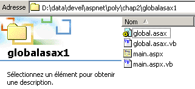
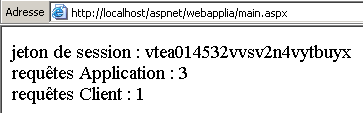
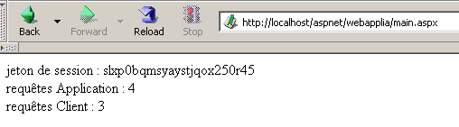
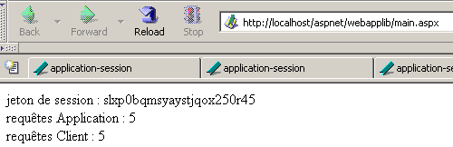
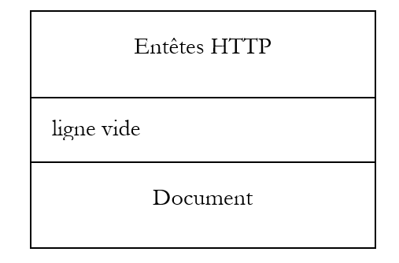
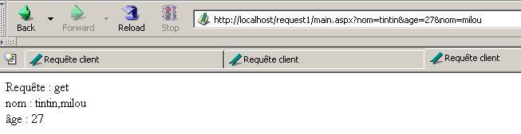
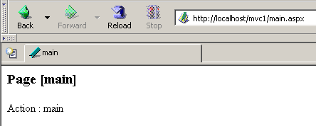
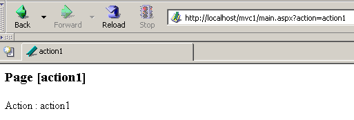

4. أساسيات التطوير ASP.NET
4.1. مفهوم تطبيق الويب ASP.NET
4.1.1. مقدمة
تطبيق الويب هو تطبيق يجمع بين مستندات متنوعة (HTML، كود .NET، صور، أصوات، ...). يجب أن تكون هذه المستندات تحت جذر واحد يُسمى جذر تطبيق الويب. ويرتبط بهذا الجذر مسار افتراضي لخادم الويب. لقد تعرفنا على مفهوم المجلد الافتراضي لخادم الويب Cassini. هذا المفهوم موجود أيضًا في خادم الويب IIS. أحد الاختلافات المهمة بين الخادمين هو أنه في وقت معين، يمكن أن يحتوي IIS على أي عدد من المجلدات الافتراضية، في حين أن خادم الويب Cassini لا يحتوي إلا على مجلد واحد، وهو المجلد الذي تم تحديده عند إطلاقه. وهذا يعني أن خادم IIS يمكنه خدمة عدة تطبيقات ويب في وقت واحد، في حين أن خادم Cassini لا يخدم سوى تطبيق واحد في كل مرة. في الأمثلة السابقة، كان خادم Cassini يُشغَّل دائمًا باستخدام المعلمات (<webroot>,/aspnet) التي تربط المجلد الافتراضي /aspnet بالمجلد الفعلي <webroot>. لذلك كان خادم الويب يخدم دائمًا نفس تطبيق الويب. لم يمنعنا ذلك من كتابة واختبار صفحات مختلفة ومستقلة داخل تطبيق الويب الوحيد هذا. لكل تطبيق ويب موارده الخاصة به والتي توجد تحت جذره الفعلي <webroot>:
- مجلد [bin] يمكن وضع فئات مسبقة التجميع فيه
- ملف [global.asax] الذي يسمح بتهيئة التطبيق الويب ككل وكذلك بيئة التشغيل لكل مستخدم من مستخدميه
- ملف [web.config] الذي يسمح بضبط إعدادات تشغيل التطبيق
- ملف [default.aspx] الذي يلعب دور بوابة الدخول إلى التطبيق
- ...
بمجرد أن يستخدم التطبيق أحد هذه الموارد الثلاثة، فإنه يحتاج إلى مسار مادي وافتراضي خاص به. في الواقع، لا يوجد أي سبب لتكوين تطبيقين ويب مختلفين بنفس الطريقة. تم وضع جميع الأمثلة السابقة في نفس التطبيق (<webroot>,/aspnet) لأنها لم تستخدم أيًا من الموارد السابقة.
لنعد إلى بنية MVC الموصى بها في بداية هذا الفصل لتطوير تطبيق ويب:

يتكون تطبيق الويب من ملفات الفئات (وحدة التحكم، فئات الأعمال، فئات الوصول إلى البيانات) وملفات العرض (مستندات HTML، صور، أصوات، أوراق أنماط، ...). سيتم وضع جميع هذه الملفات تحت جذر واحد سنسميه أحيانًا <application-path>. سيتم ربط هذا الجذر بمسار افتراضي <application-vpath>. يتم الربط بين هذا المسار الافتراضي والمسار الفعلي من خلال تكوين خادم الويب. وقد رأينا أنه بالنسبة لخادم Cassini، يتم هذا الربط عند تشغيل الخادم. على سبيل المثال، في نافذة DOS، يمكن تشغيل Cassini من خلال:
في المجلد <application-path>، سنجد حسب احتياجاتنا:
- المجلد [bin] لوضع الفئات المُجمَّعة مسبقًا (dll) فيه
- الملف [global.asax] عندما نحتاج إلى إجراء عمليات تهيئة سواء عند تهيئة التطبيق أو عند تهيئة جلسة مستخدم
- الملف [web.config] عندما نحتاج إلى تكوين التطبيق
- الملف [default.aspx] عندما نحتاج إلى صفحة افتراضية في التطبيق
من أجل الالتزام بمفهوم تطبيق الويب هذا، سيتم وضع جميع الأمثلة القادمة في مجلد <application-path> خاص بالتطبيق والذي سيتم ربطه بمجلد افتراضي <application-vpath>، حيث يتم تشغيل خادم Cassini بحيث يربط بين هذين المعلمتين.
4.1.2. تكوين تطبيق ويب
إذا كان <application-path> هو جذر تطبيق ASP.NET، فيمكن استخدام الملف <application-path>\web.config لتكوينه. هذا الملف بتنسيق XML. فيما يلي مثال:
<?xml version="1.0" encoding="UTF-8" ?>
<configuration>
<appSettings>
<add key="nom" value="tintin"/>
<add key="age" value="27"/>
</appSettings>
</configuration>
يجب الانتباه إلى أن علامات XML حساسة لحالة الأحرف. يجب أن تكون جميع معلومات التكوين بين علامتي <configuration> و</configuration>. هناك العديد من أقسام التكوين التي يمكن استخدامها. نقدم هنا قسمًا واحدًا فقط، وهو القسم <appSettings> الذي يسمح بتهيئة البيانات باستخدام العلامة <add>. صيغة هذه العلامة هي كما يلي:
عندما يقوم خادم الويب بتشغيل تطبيق، فإنه يتحقق مما إذا كان يوجد في <application-path> ملف يسمى web.config. إذا كان الأمر كذلك، فإنه يقرأه ويخزن معلوماته في كائن من النوع [ConfigurationSettings] الذي سيكون متاحًا لجميع صفحات التطبيق طالما كان هذا التطبيق نشطًا. تحتوي الفئة [ConfigurationSettings] على طريقة ثابتة [AppSettings]:

للحصول على قيمة مفتاح C من ملف التكوين، نكتب ConfigurationSettings.AppSettings("C"). نحصل على سلسلة أحرف. لاستخدام ملف التكوين السابق، ننشئ صفحة [default.aspx]. سيكون الرمز VB من الملف [default.aspx.vb] كما يلي:
Imports System.Configuration
Public Class _default
Inherits System.Web.UI.Page
Protected nom As String
Protected age As String
Private Sub Page_Load(ByVal sender As System.Object, ByVal e As System.EventArgs) Handles MyBase.Load
'استرداد معلومات التكوين
nom = ConfigurationSettings.AppSettings("nom")
age = ConfigurationSettings.AppSettings("age")
End Sub
End Class
نلاحظ أنه عند تحميل الصفحة، يتم استرداد قيم معلمات التكوين [nom] و [age]. وسيتم عرضها بواسطة كود العرض الخاص بـ [default.aspx]:
<%@ Page src="default.aspx.vb" Language="vb" AutoEventWireup="false" Inherits="_default" %>
<html>
<head>
<title>Configuration</title>
</head>
<body>
Nom :
<% =nom %><br/>
Age :
<% =age %><br/>
</body>
</html>
لإجراء الاختبار، نضع الملفات [web.config] و [default.aspx] و [default.aspx.vb] في نفس المجلد:
D:\data\devel\aspnet\poly\chap2\config1>dir
30/03/2004 15:06 418 default.aspx.vb
30/03/2004 14:57 236 default.aspx
30/03/2004 14:53 186 web.config
لنفترض أن <application-path> هو المجلد الذي توجد فيه الملفات الثلاثة للتطبيق. يتم تشغيل خادم Cassini باستخدام المعلمات (<application-path>,/aspnet/config1). نطلب URL [http://localhost/aspnet/config1]. نظرًا لأن [config1] هو مجلد، سيبحث خادم الويب عن ملف [default.aspx] بداخله ويعرضه إذا وجده. هنا، سيجده:

4.1.3. التطبيق، الجلسة، السياق
4.1.3.1. الملف global.asax
يتم دائمًا تنفيذ كود الملف [global.asax] قبل تحميل الصفحة المطلوبة في الطلب الحالي. يجب أن يكون موجودًا في جذر <application-path> للتطبيق. إذا كان موجودًا، يتم استخدام الملف [global.asax] في أوقات مختلفة بواسطة خادم الويب:
- عند بدء تشغيل تطبيق الويب أو إنهاء تشغيله
- عند بدء أو إنهاء جلسة عمل المستخدم
- عند بدء طلب مستخدم
كما هو الحال مع صفحات .aspx، يمكن كتابة ملف [global.asax] بطرق مختلفة، ولا سيما عن طريق فصل كود VB في فئة وحدة التحكم وكود العرض. هذا هو الاختيار الافتراضي الذي يحدده أداة Visual Studio وسنفعل هنا الشيء نفسه. لا يوجد عادةً أي عرض تقديمي، حيث يتم إسناد هذه المهمة إلى صفحات .aspx. وبالتالي، يتم اختزال محتوى الملف [global.asax] إلى توجيه يشير إلى الملف الذي يحتوي على كود وحدة التحكم:
<%@ Application src="Global.asax.vb" Inherits="Global" %>
يُلاحظ أن التوجيه لم يعد [Page] بل أصبح [Application]. كود وحدة التحكم [global.asax.vb] المرتبط والمولد بواسطة أداة Visual Studio هو التالي:
Imports System
Imports System.Web
Imports System.Web.SessionState
Public Class Global
Inherits System.Web.HttpApplication
Sub Application_Start(ByVal sender As Object, ByVal e As EventArgs)
' يتم تشغيله عند بدء تشغيل التطبيق
End Sub
Sub Session_Start(ByVal sender As Object, ByVal e As EventArgs)
' يتم تشغيله عند بدء الجلسة
End Sub
Sub Application_BeginRequest(ByVal sender As Object, ByVal e As EventArgs)
' يتم تشغيله في بداية كل طلب
End Sub
Sub Application_AuthenticateRequest(ByVal sender As Object, ByVal e As EventArgs)
' يتم تشغيله عند محاولة مصادقة المستخدم
End Sub
Sub Application_Error(ByVal sender As Object, ByVal e As EventArgs)
' يتم تشغيله عند حدوث خطأ
End Sub
Sub Session_End(ByVal sender As Object, ByVal e As EventArgs)
' يتم تشغيله عند انتهاء الجلسة
End Sub
Sub Application_End(ByVal sender As Object, ByVal e As EventArgs)
' يتم تشغيله عند إنهاء التطبيق
End Sub
End Class
تجدر الإشارة إلى أن فئة وحدة التحكم مشتقة من فئة [HttpApplication]. هناك العديد من الأحداث المهمة في دورة حياة التطبيق. يتم إدارة هذه الأحداث بواسطة إجراءات يرد هيكلها الأساسي أعلاه.
- [Application_Start]: تذكر أن تطبيق الويب "محصور" في مسار افتراضي. يبدأ التطبيق بمجرد أن يطلب عميل صفحة موجودة في هذا المسار الافتراضي. عندها يتم تنفيذ الإجراء [Application_Start]. وستكون هذه هي المرة الوحيدة. في هذا الإجراء، سنقوم بجميع عمليات التهيئة المفيدة للتطبيق، مثل إنشاء كائنات تكون مدة صلاحيتها هي نفس مدة صلاحية التطبيق.
- [Application-End]: يتم تنفيذها عند انتهاء التطبيق. يرتبط بكل تطبيق فترة خمول، قابلة للتكوين في [web.config]، وبعد انقضائها يُعتبر التطبيق منتهياً. وبالتالي، فإن خادم الويب هو الذي يتخذ هذا القرار بناءً على إعدادات التطبيق. يُعرَّف وقت عدم النشاط للتطبيق بأنه الوقت الذي لم يقم خلاله أي عميل بطلب مورد من موارد التطبيق.
- [Session-Start]/[Session_End]: ترتبط كل عميل بجلسة عمل ما لم يتم تكوين التطبيق بحيث لا يكون له جلسة عمل. العميل ليس مستخدمًا أمام شاشته. إذا فتح هذا المستخدم متصفحين لاستعلام التطبيق، فإنه يمثل عميلين. يتم تمييز العميل برمز جلسة عمل يجب عليه إرفاقه بكل طلب من طلباته. رمز الجلسة هذا عبارة عن سلسلة أحرف يتم إنشاؤها عشوائياً بواسطة خادم الويب وهي فريدة. لا يمكن أن يكون لدى عميلين نفس رمز الجلسة. سيتبع هذا الرمز العميل بالطريقة التالية:
- لا يرسل العميل الذي يقدم طلبه الأول رمز جلسة. يتعرف خادم الويب على هذا الأمر ويخصص له رمزًا. هذه هي بداية الجلسة ويتم تنفيذ الإجراء [Session_Start]. وستكون هذه المرة الوحيدة.
- يقوم العميل بإرسال طلباته التالية مع إرسال الرمز الذي يحدده. سيسمح ذلك لخادم الويب بالعثور على المعلومات المرتبطة بهذا الرمز. سيسمح ذلك بالتتبع بين الطلبات المختلفة للعميل.
- يمكن للتطبيق أن يتيح للعميل نموذج إنهاء الجلسة. في هذه الحالة، يكون العميل هو الذي يطلب بنفسه إنهاء جلسته. سيتم تنفيذ الإجراء [Session_End]. وستكون هذه المرة الوحيدة.
- قد لا يطلب العميل بنفسه إنهاء جلسته أبدًا. في هذه الحالة، بعد فترة معينة من عدم النشاط في الجلسة، والتي يمكن تكوينها أيضًا بواسطة [web.config]، سيتم إنهاء الجلسة بواسطة خادم الويب. سيتم عندئذٍ تنفيذ الإجراء [Session_End].
- [Application_BeginRequest]: يتم تنفيذ هذا الإجراء بمجرد وصول طلب جديد. وبالتالي، يتم تنفيذه عند كل طلب من أي عميل. يعد هذا مكانًا جيدًا لفحص الطلب قبل إرساله إلى الصفحة المطلوبة. يمكن حتى اتخاذ قرار بإعادة توجيهه إلى صفحة أخرى.
- [Application_Error]: يتم تنفيذها في كل مرة يحدث فيها خطأ لم يتم التعامل معه صراحةً بواسطة كود وحدة التحكم [global.asax.vb]. يمكن هنا إعادة توجيه طلب العميل إلى صفحة تشرح سبب الخطأ.
إذا لم يكن هناك حاجة إلى معالجة أي من هذه الأحداث، فيمكن تجاهل الملف [global.asax]. وهذا ما تم فعله في الأمثلة الأولى من هذا الفصل.
4.1.3.2. المثال 1
لنطور تطبيقًا لفهم اللحظات الثلاث التالية بشكل أفضل: بدء تشغيل التطبيق، وبدء الجلسة، وبدء طلب العميل. سيكون ملف [global.asax] كما يلي:
سيكون الملف [global.asax.vb] المرتبط به كما يلي:
Imports System
Imports System.Web
Imports System.Web.SessionState
Public Class global
Inherits System.Web.HttpApplication
Sub Application_Start(ByVal sender As Object, ByVal e As EventArgs)
' يتم تشغيله عند بدء تشغيل التطبيق
' يتم تسجيل الوقت
Dim startApplication As String = Date.Now.ToString("T")
' يتم تخزينها في سياق التطبيق
Application.Item("startApplication") = startApplication
End Sub
Sub Session_Start(ByVal sender As Object, ByVal e As EventArgs)
' يتم تشغيله عند بدء الجلسة
' يتم تسجيل الوقت
Dim startSession As String = Date.Now.ToString("T")
' يتم وضعها في الجلسة
Session.Item("startSession") = startSession
End Sub
Sub Application_BeginRequest(ByVal sender As Object, ByVal e As EventArgs)
' يتم تسجيل الوقت
Dim startRequest As String = Date.Now.ToString("T")
' يتم إدخالها في الجلسة
Context.Items("startRequest") = startRequest
End Sub
End Class
النقاط المهمة في الكود هي التالية:
- يوفر خادم الويب لفئة [HttpApplication] من [global.asax.vb] عددًا معينًا من الكائنات:
- تطبيق من النوع [HttpApplicationState] - يمثل تطبيق الويب - يتيح الوصول إلى قاموس كائنات [Application.Item] متاح لجميع عملاء التطبيق - يسمح بمشاركة المعلومات بين العملاء المختلفين - يتطلب الوصول المتزامن لعدة عملاء إلى نفس البيانات للقراءة/الكتابة مزامنة بين العملاء.
- جلسة من النوع [HttpSessionState] - تمثل عميلاً معيناً - تتيح الوصول إلى قاموس كائنات [Session.Item] متاح لجميع طلبات هذا العميل - ستسمح بتخزين معلومات عن عميل يمكن العثور عليها عبر طلباته.
- طلب من النوع [HttpRequest] - يمثل الطلب الحالي HTTP للعميل
- الاستجابة من النوع [HttpResponse] - تمثل الاستجابة HTTP التي يجري إنشاؤها حاليًا من الخادم إلى العميل
- خادم من النوع [HttpServerUtility] - يوفر طرقًا مساعدة، لا سيما لنقل الطلب إلى صفحة أخرى غير تلك المحددة في الأصل.
- سياق من النوع [HttpContext] - يتم إعادة إنشاء هذا الكائن مع كل طلب جديد ولكنه مشترك بين جميع الصفحات المشاركة في معالجة الطلب - يسمح بنقل المعلومات من صفحة إلى أخرى أثناء معالجة الطلب بفضل قاموس Items الخاص به.
- تسجل الإجراء [Application_Start] بداية التطبيق في متغير مخزن في قاموس يمكن الوصول إليه على مستوى التطبيق
- تقوم الإجراء [Session_Start] بتسجيل بداية الجلسة في متغير مخزن في قاموس يمكن الوصول إليه على مستوى الجلسة
- تقوم الإجراء [Application_BeginRequest] بتسجيل بداية الطلب في متغير مخزن في قاموس يمكن الوصول إليه على مستوى الطلب (c.a.d متاح طوال فترة معالجته ولكنه يُفقد في نهايتها)
وستكون الصفحة المستهدفة هي الصفحة التالية [main.aspx]:
<%@ Page src="main.aspx.vb" Language="vb" AutoEventWireup="false" Inherits="main" %>
<html>
<head>
<title>global.asax</title>
</head>
<body>
jeton de session :
<% =jeton %><br/>
début Application :
<% =startApplication %><br/>
début Session :
<% =startSession %><br/>
début Requête :
<% =startRequest %><br/>
</body>
</html>
تعرض صفحة العرض هذه القيم التي تم حسابها بواسطة وحدة التحكم الخاصة بها [main.aspx.vb]:
Public Class main
Inherits System.Web.UI.Page
Protected startApplication As String
Protected startSession As String
Protected startRequest As String
Protected jeton as String
Private Sub Page_Load(ByVal sender As System.Object, ByVal e As System.EventArgs) Handles MyBase.Load
' يتم استرداد معلومات التطبيق والجلسة
jeton=Session.SessionId
startApplication = Application.Item("startApplication").ToString
startSession = Session.Item("startSession").ToString
startRequest = Context.Items("startRequest").ToString
End Sub
End Class
يكتفي جهاز التحكم باسترداد المعلومات الثلاث الموضوعة على التوالي في التطبيق والجلسة والسياق بواسطة [global.asax.vb].
نقوم باختبار التطبيق بالطريقة التالية:
- يتم تجميع الملفات في مجلد واحد <application-path>

- يتم تشغيل خادم Cassini باستخدام المعلمات (<application-path>,/aspnet/globalasax1)
- يطلب عميل أول عنوان URL [http://localhost/aspnet/globalasax1/main.aspx] ويحصل على النتيجة التالية:

- يقوم نفس العميل بإجراء طلب جديد (خيار إعادة التحميل في المتصفح):

يمكن ملاحظة أن وقت الطلب هو الشيء الوحيد الذي تغير. وهذا يوضح أمرين:
- لم يتم تنفيذ الإجراءات [Application_Start] و [Session_Start] من [global.asax] عند الطلب الثاني.
- الكائنات [Application] و [Session] حيث تم تخزين أوقات بدء التطبيق والجلسة لا تزال متاحة للطلب الثاني.
- يتم تشغيل متصفح ثانٍ لإنشاء عميل ثانٍ ونطلب نفس عنوان URL مرة أخرى:

هذه المرة، نلاحظ أن وقت الجلسة قد تغير. تم اعتبار المتصفح الثاني، على الرغم من وجوده على نفس الجهاز، عميلاً ثانياً وتم إنشاء جلسة جديدة له. يمكن ملاحظة أن العميلين لا يمتلكان رمز الجلسة نفسه. لم يتغير وقت بدء التطبيق، مما يعني أن:
- لم يتم تنفيذ الإجراء [Application_Start] الخاص بـ [global.asax.vb]
- يمكن للعميل الثاني الوصول إلى الكائن [Application] حيث تم تخزين وقت بدء التطبيق. لذلك، يجب تخزين المعلومات التي يجب مشاركتها بين مختلف عملاء التطبيق في هذا الكائن، بينما يستخدم الكائن [Session] لتخزين المعلومات التي يجب مشاركتها بين طلبات نفس العميل.
4.1.3.3. نظرة عامة
بناءً على ما تعلمناه حتى الآن، يمكننا وضع مخطط توضيحي أولي لكيفية عمل خادم الويب والتطبيقات التي يخدمها:

يوضح المخطط السابق خادمًا يخدم تطبيقين يُشار إليهما بـ A و B، لكل منهما عميلان. يمكن لخادم الويب خدمة عدة تطبيقات ويب في وقت واحد. هذه التطبيقات مستقلة تمامًا عن بعضها البعض. سنركز على التطبيق A. ستتم معالجة طلب العميل-1A إلى التطبيق A على النحو التالي:
- يطلب العميل 1A من خادم الويب موردًا ينتمي إلى نطاق التطبيق A. وهذا يعني أنه يطلب URL بالشكل [http://machine:port/VA/ressource] حيث VA هو المسار الافتراضي للتطبيق A.
- إذا اكتشف خادم الويب أن هذا هو الطلب الأول لمورد من التطبيق A، فإنه يطلق الحدث [Application_Start] من الملف [global.asax] الخاص بالتطبيق A. سيتم إنشاء كائن [ApplicationA] من النوع [HttpApplicationState]. ستقوم الرموز المختلفة للتطبيق بتخزين بيانات النطاق [Application] و c.a.d في هذا الكائن، وهي بيانات تتعلق بجميع المستخدمين. سيظل الكائن [ApplicationA] موجودًا حتى يقوم خادم الويب بتفريغ التطبيق A.
- وإذا اكتشف خادم الويب أيضًا أنه يتعامل مع عميل جديد للتطبيق A، فسوف يقوم بتشغيل الحدث [Session_Start] من الملف [global.asax] الخاص بالتطبيق A. سيتم إنشاء كائن [Session-1A] من النوع [HttpSessionState]. سيسمح هذا الكائن للتطبيق A بتخزين كائنات ذات نطاق [Session] و c.a.d، وهي كائنات تنتمي إلى عميل محدد. سيظل الكائن [Session-1A] موجودًا طالما أن العميل 1A يقوم بإرسال الطلبات. وسيسمح هذا الكائن بتتبع هذا العميل. يكتشف خادم الويب أنه يتعامل مع عميل جديد في حالتين:
- لم يرسل العميل رمز جلسة عمل في رؤوس طلبه HTTP
- أرسل العميل رمز جلسة غير موجود (خلل في عمل العميل أو محاولة اختراق) أو لم يعد موجودًا. تنتهي صلاحية رمز الجلسة بعد فترة معينة من عدم نشاط العميل (20 دقيقة بشكل افتراضي مع IIS). هذه المدة قابلة للبرمجة.
- في جميع الأحوال، سيقوم خادم الويب بتشغيل الحدث [Application_BeginRequest] من الملف [global.asax]. يبدأ هذا الحدث معالجة طلب العميل. من الشائع عدم معالجة هذا الحدث وتمرير زمام الأمور إلى الصفحة التي طلبها العميل والتي ستقوم هي بمعالجة الطلب. يمكن أيضًا استخدام هذا الحدث لتحليل الطلب ومعالجته وتحديد الصفحة التي يجب إرسالها كاستجابة. سنستخدم هذه التقنية لإنشاء تطبيق يتوافق مع بنية MVC التي تحدثنا عنها.
- بمجرد اجتياز مرشح [global.asax]، يتم تمرير طلب العميل إلى صفحة .aspx ستقوم بمعالجة الطلب. سنرى لاحقًا أنه من الممكن تمرير الطلب عبر مرشح مكون من عدة صفحات. وستتولى الصفحة الأخيرة إرسال الرد إلى العميل. يمكن للصفحات إضافة المعلومات التي قامت بحسابها إلى الطلب الأولي للعميل. ويمكنها تخزين هذه المعلومات في المجموعة Context.Items. في الواقع، تتمتع جميع الصفحات المشاركة في معالجة طلب العميل بإمكانية الوصول إلى مخزن البيانات هذا.
- يمكن لرمز الصفحات المختلفة الوصول إلى مخازن البيانات المتمثلة في الكائنات [ApplicationA] و [Session-1A]، ... يجب تذكر أن خادم الويب يعالج عدة عملاء في وقت واحد للتطبيق A. جميع هؤلاء العملاء لديهم حق الوصول إلى الكائن [Application A]. إذا كان عليهم تعديل البيانات في هذا الكائن، فهناك عمل مزامنة للعملاء يجب القيام به. كما أن كل عميل XA لديه حق الوصول إلى مخزن البيانات [Session-XA]. ونظرًا لأن هذا المخزن مخصص له، فلا توجد حاجة إلى إجراء أي مزامنة هنا.
- يخدم خادم الويب عدة تطبيقات ويب في وقت واحد. ولا يوجد أي تداخل بين عملاء هذه التطبيقات المختلفة.
من هذه التفسيرات، يمكننا استخلاص النقاط التالية:
- في وقت معين، يخدم خادم الويب عدة عملاء في وقت واحد. وهذا يعني أنه لا ينتظر انتهاء طلب ما لمعالجة طلب آخر. في الوقت T، هناك عدة طلبات قيد المعالجة تخص عملاء مختلفين لتطبيقات مختلفة. يُطلق أحيانًا على أكواد المعالجة التي تجري في نفس الوقت داخل خادم الويب اسم "خيوط التنفيذ".
- لا تتداخل خيوط التنفيذ الخاصة بعملاء تطبيقات الويب المختلفة مع بعضها البعض. هناك عزل تام.
- قد تضطر خيوط التنفيذ الخاصة بعملاء نفس التطبيق إلى مشاركة البيانات:
- يمكن لخيوط التنفيذ الخاصة بطلبات عميلين مختلفين (ليس نفس رمز الجلسة) مشاركة البيانات باستخدام الكائن [Application].
- يمكن لخيوط التنفيذ الخاصة بالطلبات المتتالية لنفس العميل مشاركة البيانات باستخدام الكائن [Session].
- يمكن لخيوط تنفيذ الصفحات المتتالية التي تعالج نفس الطلب لعميل معين مشاركة البيانات باستخدام الكائن [Context].
4.1.3.4. المثال 2
لنطور مثالًا جديدًا يوضح ما سبق ذكره. نجمع الملفات التالية في نفس المجلد:
[global.asax]
[global.asax.vb]
Imports System
Imports System.Web
Imports System.Web.SessionState
Public Class global
Inherits System.Web.HttpApplication
Sub Application_Start(ByVal sender As Object, ByVal e As EventArgs)
' يتم تشغيله عند بدء تشغيل التطبيق
' تعيين عداد العملاء
Application.Item("nbRequêtes") = 0
End Sub
Sub Session_Start(ByVal sender As Object, ByVal e As EventArgs)
' يتم تشغيله عند بدء الجلسة
' تعيين عداد الطلبات
Session.Item("nbRequêtes") = 0
End Sub
End Class
سيكون مبدأ التطبيق هو حساب العدد الإجمالي للطلبات الموجهة إلى التطبيق وعدد الطلبات لكل عميل. عند بدء تشغيل التطبيق [Application_Start]، يتم تعيين عداد الطلبات الموجهة إلى التطبيق على 0. يتم وضع هذا العداد في النطاق [Application] لأنه يجب أن يتم زيادته من قبل جميع العملاء. عندما يظهر عميل لأول مرة في [Session_Start]، يتم تعيين عداد الطلبات التي قدمها هذا العميل إلى 0. يتم وضع هذا العداد في النطاق [Session] لأنه لا يتعلق إلا بعميل معين.
بمجرد تنفيذ [global.asax]، سيتم تنفيذ الملف التالي [main.aspx]:
<%@ Page src="main.aspx.vb" Language="vb" AutoEventWireup="false" Inherits="main" %>
<html>
<head>
<title>application-session</title>
</head>
<body>
jeton de session :
<% =jeton %>
<br />
requêtes Application :
<% =nbRequêtesApplication %>
<br />
requêtes Client :
<% =nbRequêtesClient %>
<br />
</body>
</html>
يعرض ثلاث معلومات تم حسابها بواسطة وحدة التحكم الخاصة به:
- هوية العميل عبر رمز الجلسة الخاص به: [jeton]
- العدد الإجمالي للطلبات الموجهة إلى التطبيق: [nbRequêtesApplication]
- إجمالي عدد الطلبات التي قدمها العميل المحدد في 1: [nbRequêtesClient]
يتم حساب هذه المعلومات الثلاث في [main.aspx.vb]:
Public Class main
Inherits System.Web.UI.Page
Protected nbRequêtesApplication As String
Protected nbRequêtesClient As String
Protected jeton As String
Private Sub Page_Load(ByVal sender As Object, ByVal e As System.EventArgs) Handles MyBase.Load
' طلب إضافي للتطبيق
Application.Item("nbRequêtes") = CType(Application.Item("nbRequêtes"), Integer) + 1
' طلب إضافي في الجلسة
Session.Item("nbRequêtes") = CType(Session.Item("nbRequêtes"), Integer) + 1
' تهيئة متغيرات العرض
nbRequêtesApplication = Application.Item("nbRequêtes").ToString
jeton = Session.SessionID
nbRequêtesClient = Session.Item("nbRequêtes").ToString
End Sub
End Class
عند تنفيذ [main.aspx.vb]، نكون بصدد معالجة طلب من عميل معين. نستخدم الكائن [Application] لزيادة عدد طلبات التطبيق، والكائن [Session] لزيادة عدد طلبات العميل الذي نقوم بمعالجة طلبه حالياً. تجدر الإشارة إلى أنه إذا كان جميع عملاء نفس التطبيق يتشاركون نفس الكائن [Application]، فإن لكل منهم كائن [Session] خاص به.
نقوم باختبار التطبيق عن طريق وضع الملفات الأربعة السابقة في مجلد نسميه <application-path> ونقوم بتشغيل خادم Cassini باستخدام المعلمات (<application-path>,/aspnet/webapplia). نقوم بتشغيل متصفح أول ونطلب عنوان URL [http://localhost/aspnet/webapplia/main.aspx]:

نقوم بإجراء طلب ثانٍ باستخدام الزر [Reload]:

نقوم بتشغيل متصفح ثانٍ لطلب نفس عنوان URL. بالنسبة لخادم الويب، يعتبر هذا عميلاً جديداً:

يمكننا ملاحظة أن رمز الجلسة قد تغير، وبالتالي لدينا عميل جديد. وينعكس ذلك في عدد طلبات العميل. لنعد الآن إلى المتصفح الأول ونطلب نفس عنوان URL مرة أخرى:

يتم حساب عدد الطلبات الموجهة إلى التطبيق بشكل صحيح.
4.1.3.5. ضرورة مزامنة عملاء التطبيق
في التطبيق السابق، يتم زيادة عداد الطلبات الموجهة إلى التطبيق في الإجراء [Form_Load] في الصفحة [main.aspx] بالطريقة التالية:
' طلب إضافي للتطبيق
Application.Item("nbRequêtes") = CType(Application.Item("nbRequêtes"), Integer) + 1
هذه التعليمات، على الرغم من بساطتها، تتطلب عدة تعليمات من المعالج لتنفيذها. لنفترض أن الأمر يتطلب ثلاث تعليمات:
- قراءة العداد
- زيادة العداد
- إعادة كتابة العداد
يعمل خادم الويب على جهاز متعدد المهام، مما يعني أن كل مهمة تحصل على المعالج لبضع ميلي ثوانٍ قبل أن تفقده ثم تستعيده بعد أن تحصل جميع المهام الأخرى أيضًا على حصتها من الوقت. لنفترض أن عميلين A و B يقدمان طلبًا في نفس الوقت إلى خادم الويب. لنفترض أن العميل A يأتي أولاً، ويصل إلى الإجراء [Form_Load] من [main.aspx.vb]، ويقرأ العداد (=100) ثم يتم مقاطعته لأن حصته من الوقت قد نفدت. لنفترض الآن أن الدور قد حان للعميل B وأنه يواجه نفس المصير: يتمكن من قراءة قيمة العداد (=100) ولكنه لا يملك الوقت الكافي لزيادة قيمته. يمتلك كل من العميلين A و B عدادًا يساوي 100. لنفترض أن الدور عاد إلى العميل A: يقوم بزيادة عداده، ويغيره إلى 101 ثم ينتهي. يأتي دور العميل B الذي يمتلك القيمة القديمة للعداد وليس القيمة الجديدة. لذلك يقوم هو أيضًا بتغيير قيمة العداد إلى 101 ثم ينتهي. أصبحت قيمة عداد طلبات التطبيق الآن خاطئة.
لتوضيح هذه المشكلة، نعود إلى التطبيق السابق ونقوم بتعديله على النحو التالي:
- لا تتغير الملفات [global.asax] و [global.asax.vb] و [main.aspx]
- يصبح الملف [main.aspx.vb] كما يلي:
Imports System.Threading
Public Class main
Inherits System.Web.UI.Page
Protected nbRequêtesApplication As Integer
Protected nbRequêtesClient As Integer
Protected jeton As String
Private Sub Page_Load(ByVal sender As Object, ByVal e As System.EventArgs) Handles MyBase.Load
' طلب إضافي للتطبيق والجلسة
' قراءة العدادات
nbRequêtesApplication = CType(Application.Item("nbRequêtes"), Integer)
nbRequêtesClient = CType(Session.Item("nbRequêtes"), Integer)
' الانتظار لمدة 5 ثوانٍ
Thread.Sleep(5000)
' زيادة العدادات
nbRequêtesApplication += 1
nbRequêtesClient += 1
' تسجيل العدادات
Application.Item("nbRequêtes") = nbRequêtesApplication
Session.Item("nbRequêtes") = nbRequêtesClient
' تهيئة متغيرات العرض
jeton = Session.SessionID
End Sub
End Class
تم تقسيم عملية زيادة العدادات إلى أربع مراحل:
- قراءة العداد
- تعليق مؤشر الترابط
- زيادة العداد
- إعادة كتابة العداد
لنعد إلى عميلينا A و B. بين مرحلة القراءة ومرحلة زيادة عدادات الطلبات، نجبر مؤشر الترابط التنفيذي على التوقف لمدة 5 ثوانٍ. وسيكون النتيجة المباشرة لذلك أنه سيفقد وحدة المعالجة المركزية التي ستُخصص عندئذٍ لمهمة أخرى. لنفترض أن العميل A يمر أولاً. سيقرأ القيمة N للعداد وسيتم مقاطعته لمدة 5 ثوانٍ. إذا كان العميل B يمتلك المعالج خلال هذه الفترة، فمن المفترض أن يقرأ نفس القيمة N للعداد. في النهاية، من المفترض أن يعرض كلا العميلين نفس قيمة العداد، وهو ما سيكون غير طبيعي.
نقوم باختبار التطبيق عن طريق وضع الملفات الأربعة السابقة في مجلد نسميه <application-path> ونقوم بتشغيل خادم Cassini باستخدام المعلمات (<application-path>,/aspnet/webapplib). نجهز متصفحين مختلفين باستخدام عنوان URL [http://localhost/aspnet/webapplib/main.aspx]. نقوم بتشغيل المتصفح الأول ليطلب عنوان URL، ثم دون انتظار الرد الذي سيصل بعد 5 ثوانٍ، نقوم بتشغيل المتصفح الثاني. بعد ما يزيد قليلاً عن 5 ثوانٍ، نحصل على النتيجة التالية:

ونلاحظ:
- أن لدينا عميلين مختلفين (ليس لديهما نفس رمز الجلسة)
- أن كل عميل قد أرسل طلبًا
- أن عداد الطلبات الموجهة إلى التطبيق يجب أن يكون عند 2 في أحد المتصفحين. لكن هذا ليس هو الحال.
الآن، لنقم بتجربة أخرى. باستخدام نفس المتصفح، نرسل خمسة طلبات إلى عنوان URL [http://localhost/aspnet/webapplib/main.aspx]. ومرة أخرى، نرسلها واحدة تلو الأخرى دون انتظار النتائج. عندما يتم تنفيذ جميع الطلبات، نحصل على النتيجة التالية للطلب الأخير:

يمكن ملاحظة ما يلي:
- أن الطلبات الخمسة اعتُبرت قادمة من نفس العميل لأن عداد طلبات العميل يبلغ 5. لم يظهر ذلك أعلاه، لكننا نلاحظ أن رمز الجلسة هو نفسه فعليًا للطلبات الخمسة.
- أن عداد الطلبات الموجهة إلى التطبيق صحيح.
ماذا نستنتج من ذلك؟ لا شيء نهائي. ربما لا يبدأ خادم الويب في تنفيذ طلب من عميل ما إذا كان هذا العميل لديه طلب قيد التنفيذ بالفعل؟ وبالتالي، لن يكون هناك أبدًا تزامن في تنفيذ الطلبات من نفس العميل. بل سيتم تنفيذها واحدة تلو الأخرى. يجب التحقق من هذه النقطة. فقد تعتمد بالفعل على نوع العميل المستخدم.
4.1.3.6. تزامن العملاء
المشكلة التي تم تسليط الضوء عليها في التطبيق السابق هي مشكلة كلاسيكية (ولكن ليس من السهل حلها) تتعلق بالوصول الحصري إلى مورد ما. في مشكلتنا الخاصة، يجب التأكد من أن العميلين A و B لا يمكن أن يكونا في نفس الوقت في تسلسل الكود:
- قراءة العداد
- زيادة العداد
- إعادة كتابة العداد
يُطلق على تسلسل التعليمات البرمجية هذا اسم "التسلسل الحرج". وهو يتطلب تزامن الخيوط التي ستقوم بتنفيذه في وقت واحد. توفر منصة .NET أدوات متنوعة لضمان ذلك. سنستخدم هنا الفئة [Mutex].

لن نستخدم هنا سوى المنشئات والطرق التالية:
ينشئ كائن مزامنة M | |
يطلب مؤشر الترابط T1 الذي ينفذ العملية M.WaitOne() ملكية كائن التزامن M. إذا لم يكن مؤشر التزامن M محتجزًا من قبل أي مؤشر ترابط (وهو الحال في البداية)، يتم "منحه" إلى الخيط T1 الذي طلبه. إذا قام خيط T2 بعد ذلك بوقت قصير بنفس العملية، فسيتم حظره. في الواقع، لا يمكن أن ينتمي Mutex إلا إلى مؤشر ترابط واحد. سيتم إلغاء حظره عندما يحرر مؤشر الترابط T1 الميتكس M الذي يحتفظ به. وبالتالي، يمكن حظر عدة مؤشرات ترابط في انتظار الميتكس M. | |
يتخلى الخيط T1 الذي يقوم بالعملية M.ReleaseMutex() عن ملكية Mutex M. عندما يفقد الخيط T1 المعالج، سيتمكن النظام من إعطائه لأحد الخيوط التي تنتظر Mutex M. سيحصل واحد منها عليه بدوره، بينما تظل الخيوط الأخرى التي تنتظر M معطلة |
يدير Mutex M الوصول إلى مورد مشترك R. يطلب مؤشر ترابط المورد R بواسطة M.WaitOne() ويعيده بواسطة M.ReleaseMutex(). يعد الجزء الحرج من الكود الذي يجب ألا يتم تنفيذه إلا بواسطة مؤشر ترابط واحد في كل مرة موردًا مشتركًا. يمكن إجراء تزامن تنفيذ الجزء الحرج على النحو التالي:
حيث M هو كائن Mutex. وبالطبع يجب ألا ننسى أبدًا تحرير Mutex الذي أصبح عديم الفائدة، حتى يتمكن مؤشر ترابط آخر من الدخول إلى القسم الحرج بدوره، وإلا فإن مؤشرات الترابط التي تنتظر Mutex لم يتم تحريره أبدًا لن تتمكن أبدًا من الوصول إلى المعالج. علاوة على ذلك، يجب تجنب حالة التعطل المتبادل (deadlock) التي ينتظر فيها خيطان بعضهما البعض. لنفكر في الإجراءات التالية التي تتعاقب زمنياً:
- يحصل مؤشر الترابط T1 على ملكية Mutex M1 للوصول إلى مورد مشترك R1
- يحصل مؤشر الترابط T2 على ملكية Mutex M2 للوصول إلى مورد مشترك R2
- يطلب مؤشر الترابط T1 الميوتكس M2. يتم حظره.
- يطلب مؤشر الترابط T2 Mutex M1. وهو محجوب.
هنا، ينتظر الخيطان T1 و T2 بعضهما البعض. تظهر هذه الحالة عندما تحتاج الخيوط إلى موردين مشتركين، المورد R1 الذي يتحكم فيه Mutex M1 والمورد R2 الذي يتحكم فيه Mutex M2. أحد الحلول الممكنة هو طلب الموردين في نفس الوقت باستخدام Mutex واحد M. لكن هذا ليس ممكنًا دائمًا، خاصةً إذا كان ذلك سيؤدي إلى تخصيص مورد مكلف لفترة طويلة. هناك حل آخر يتمثل في أن يقوم مؤشر الترابط الذي يمتلك M1 ولا يمكنه الحصول على M2، بإطلاق M1 لتجنب التداخل.
إذا طبقنا ما تعلمناه للتو، يصبح تطبيقنا كما يلي:
- لا تتغير الملفات [global.asax] و [main.aspx]
- يصبح الملف [global.asax.vb] كما يلي:
Imports System
Imports System.Web
Imports System.Web.SessionState
Imports System.Threading
Public Class global
Inherits System.Web.HttpApplication
Sub Application_Start(ByVal sender As Object, ByVal e As EventArgs)
' يتم تشغيله عند بدء تشغيل التطبيق
' بدء تشغيل عداد العملاء
Application.Item("nbRequêtes") = 0
' إنشاء قفل مزامنة
Application.Item("verrou") = New Mutex
End Sub
Sub Session_Start(ByVal sender As Object, ByVal e As EventArgs)
' يتم تشغيله عند بدء الجلسة
' تهيئة عداد الطلبات
Session.Item("nbRequêtes") = 0
End Sub
End Class
الشيء الجديد الوحيد هو إنشاء ملف [Mutex] الذي سيستخدمه العملاء للمزامنة. ولأنه يجب أن يكون متاحًا لجميع العملاء، فقد تم وضعه في الكائن [Application].
- يصبح الملف [main.aspx.vb] كما يلي:
Imports System.Threading
Public Class main
Inherits System.Web.UI.Page
Protected nbRequêtesApplication As Integer
Protected nbRequêtesClient As Integer
Protected jeton As String
Private Sub Page_Load(ByVal sender As Object, ByVal e As System.EventArgs) Handles MyBase.Load
' طلب إضافي للتطبيق والجلسة
' الدخول إلى قسم حرج - استرداد قفل التزامن
Dim verrou As Mutex = CType(Application.Item("verrou"), Mutex)
' يُطلب الدخول بمفردنا إلى القسم الحرج التالي
verrou.WaitOne()
' قراءة العدادات
nbRequêtesApplication = CType(Application.Item("nbRequêtes"), Integer)
nbRequêtesClient = CType(Session.Item("nbRequêtes"), Integer)
' الانتظار لمدة 5 ثوانٍ
Thread.Sleep(5000)
' زيادة العدادات
nbRequêtesApplication += 1
nbRequêtesClient += 1
' تسجيل العدادات
Application.Item("nbRequêtes") = nbRequêtesApplication
Session.Item("nbRequêtes") = nbRequêtesClient
' السماح بالوصول إلى القسم الحرج
verrou.ReleaseMutex()
' تهيئة متغيرات العرض
jeton = Session.SessionID
End Sub
End Class
نرى أن العميل:
- يطلب الدخول بمفرده إلى القسم الحرج. ولهذا الغرض، يطلب الملكية الحصرية للموتكس [verrou]
- يقوم بتحرير Mutex [verrou] في نهاية القسم الحرج حتى يتمكن عميل آخر من الدخول بدوره إلى القسم الحرج.
نقوم باختبار التطبيق عن طريق وضع الملفات الأربعة السابقة في مجلد نسميه <application-path> ونقوم بتشغيل خادم Cassini باستخدام المعلمات (<application-path>,/aspnet/webapplic). نجهز متصفحين مختلفين باستخدام عنوان URL [http://localhost/aspnet/webapplic/main.aspx]. نقوم بتشغيل المتصفح الأول ليطلب عنوان URL، ثم، دون انتظار الرد الذي سيصل بعد 5 ثوانٍ، نقوم بتشغيل المتصفح الثاني. بعد ما يزيد قليلاً عن 5 ثوانٍ، نحصل على النتيجة التالية:

هذه المرة، عداد طلبات التطبيق صحيح.
سنستخلص من هذا العرض التوضيحي الطويل الضرورة المطلقة لمزامنة عملاء نفس التطبيق الويب، إذا كان عليهم تحديث عناصر مشتركة بين جميع العملاء.
4.1.3.7. إدارة رمز الجلسة
لقد تحدثنا مرات عديدة عن رمز الجلسة الذي يتبادله العميل وخادم الويب. دعونا نذكر مبدأه:
- يقوم العميل بإرسال طلب أول إلى الخادم. ولا يرسل رمز جلسة العمل.
- نظرًا لعدم وجود رمز الجلسة في الطلب، يتعرف الخادم على عميل جديد ويخصص له رمزًا. ويرتبط بهذا الرمز أيضًا كائن [Session] الذي سيُستخدم لتخزين المعلومات الخاصة بهذا العميل. ستتبع الرمز جميع طلبات هذا العميل. وسيتم تضمينه في رؤوس HTTP للرد على الطلب الأول للعميل.
- أصبح العميل الآن على علم برمز الجلسة الخاص به. وسيقوم بإرساله في رؤوس HTTP لكل طلب من الطلبات التالية التي سيقوم بإرسالها إلى خادم الويب. وبفضل الرمز، سيتمكن الخادم من العثور على الكائن [Session] المرتبط بالعميل.
لتوضيح هذه الآلية، نستأنف التطبيق السابق مع تعديل ملف [main.aspx.vb] فقط:
Imports System.Threading
Public Class main
Inherits System.Web.UI.Page
Protected nbRequêtesApplication As Integer
Protected nbRequêtesClient As Integer
Protected jeton As String
Private Sub Page_Load(ByVal sender As Object, ByVal e As System.EventArgs) Handles MyBase.Load
' طلب إضافي للتطبيق والجلسة
' الدخول إلى قسم حرج - استرداد قفل التزامن
Dim verrou As Mutex = CType(Application.Item("verrou"), Mutex)
' يُطلب الدخول بمفردنا إلى القسم التالي
verrou.WaitOne()
' قراءة العدادات
nbRequêtesApplication = CType(Application.Item("nbRequêtes"), Integer)
nbRequêtesClient = CType(Session.Item("nbRequêtes"), Integer)
' الانتظار لمدة 5 ثوانٍ
Thread.Sleep(5000)
' زيادة العدادات
nbRequêtesApplication += 1
nbRequêtesClient += 1
' تسجيل العدادات
Application.Item("nbRequêtes") = nbRequêtesApplication
Session.Item("nbRequêtes") = nbRequêtesClient
' يُسمح بالوصول إلى القسم الحرج
verrou.ReleaseMutex()
' تهيئة متغيرات العرض
jeton = Session.SessionID
End Sub
Private Sub Page_Init(ByVal sender As Object, ByVal e As System.EventArgs) Handles MyBase.Init
' يتم تخزين طلب العميل في request.txt في مجلد التطبيق
Dim requestFileName As String = Me.MapPath(Me.TemplateSourceDirectory) + "\request.txt"
Me.Request.SaveAs(requestFileName, True)
End Sub
End Class
عند حدوث الحدث [Page_Init]، نقوم بحفظ طلب العميل في مجلد التطبيق. دعونا نذكر بعض النقاط:
- يمثل [TemplateSourceDirectory] المسار الافتراضي للصفحة قيد التنفيذ،
- MapPath(TemplateSourceDirectory) يمثل المسار الفعلي المقابل. وهذا يسمح لنا بإنشاء المسار الفعلي للملف المطلوب إنشاؤه،
- [Request] هو كائن يمثل الطلب قيد المعالجة. تم إنشاء هذا الكائن باستخدام الطلب الخام المرسل من العميل، c.a.d. سلسلة من أسطر النص بالشكل:

- Request.Save([FileName]) يحفظ كامل طلب العميل (رؤوس HTTP وربما المستند الذي يليها) في ملف يتم تمرير مساره كمعلمة.
وبالتالي، سنتمكن من معرفة طلب العميل بالضبط. نختبر التطبيق عن طريق وضع الملفات الأربعة السابقة في مجلد نسميه <application-path> ونقوم بتشغيل خادم Cassini باستخدام المعلمات (<application-path>,/aspnet/session1). ثم باستخدام متصفح، نطلب URL
[http://localhost/aspnet/session1/main.aspx]. نحصل على النتيجة التالية:

نستخدم الملف [request.txt] الذي تم حفظه بواسطة [main.aspx.vb] للوصول إلى طلب المتصفح:
GET /aspnet/session1/main.aspx HTTP/1.1
Cache-Control: max-age=0
Connection: keep-alive
Keep-Alive: 300
Accept: text/xml,application/xml,application/xhtml+xml,text/html;q=0.9,text/plain;q=0.8,image/png,*/*;q=0.5
Accept-Charset: ISO-8859-1,utf-8;q=0.7,*;q=0.7
Accept-Encoding: gzip,deflate
Accept-Language: en-us,en;q=0.5
Host: localhost
User-Agent: Mozilla/5.0 (Windows; U; Windows NT 5.0; en-US; rv:1.7b) Gecko/20040316
نلاحظ أن المتصفح قد أرسل طلب URL [/aspnet/session1/main.aspx]، وأرسل معلومات أخرى سبق أن تحدثنا عنها في الفصل السابق. لا نرى أي رمز جلسة عمل. تظهر الصفحة التي تم استلامها كرد أن الخادم قد أنشأ رمز جلسة عمل. لا نعرف بعد ما إذا كان المتصفح قد استلمه أم لا. لنقم الآن بإجراء طلب ثانٍ باستخدام نفس المتصفح (إعادة التحميل). نحصل على الرد الجديد التالي:

هناك بالفعل تتبع للجلسة حيث تم زيادة عدد طلبات الجلسة بشكل صحيح. لنرى الآن محتوى الملف [request.txt]:
GET /aspnet/session1/main.aspx HTTP/1.1
Cache-Control: max-age=0
Connection: keep-alive
Keep-Alive: 300
Accept: text/xml,application/xml,application/xhtml+xml,text/html;q=0.9,text/plain;q=0.8,image/png,*/*;q=0.5
Accept-Charset: ISO-8859-1,utf-8;q=0.7,*;q=0.7
Accept-Encoding: gzip,deflate
Accept-Language: en-us,en;q=0.5
Cookie: ASP.NET_SessionId=y153tk45sise0lrhdzrf22m3
Host: localhost
User-Agent: Mozilla/5.0 (Windows; U; Windows NT 5.0; en-US; rv:1.7b) Gecko/20040316
نلاحظ أنه، بالنسبة لهذا الطلب الثاني، أرسل المتصفح إلى الخادم رأسًا جديدًا HTTP [Cookie:] يحدد معلومة تسمى [ASP.NET_SessionId] وقيمتها هي رمز الجلسة الذي ظهر في الرد على الطلب الأول. بفضل هذه الرمز، سيقوم خادم الويب بربط هذا الطلب الجديد بالكائن [Session] المحدد بواسطة الرمز [y153tk45sise0lrhdzrf22m3] واستعادة عداد الطلبات المرتبط به.
لا نزال لا نعرف الآلية التي استخدمها الخادم لإرسال الرمز إلى العميل لأننا لا نستطيع الوصول إلى استجابة الخادم HTTP. تذكر أن هذه الاستجابة لها نفس بنية طلب العميل، أي مجموعة من أسطر النص بالشكل:

أتيحت لنا الفرصة لاستخدام عميل ويب يتيح لنا الوصول إلى استجابة الخادم HTTP، وهو عميل curl. نستخدمه مرة أخرى، في نافذة DOS، لاستعلام نفس عنوان URL الذي استخدمه المتصفح السابق:
E:\curl>curl --include http://localhost/aspnet/session1/main.aspx
HTTP/1.1 200 OK
Server: Microsoft ASP.NET Web Matrix Server/0.6.0.0
Date: Thu, 01 Apr 2004 07:31:42 GMT
X-AspNet-Version: 1.1.4322
Set-Cookie: ASP.NET_SessionId=qxnxmqmvhde3al55kzsmx445; path=/
Cache-Control: private
Content-Type: text/html; charset=utf-8
Content-Length: 228
Connection: Close
<HTML>
<HEAD>
<title>application-session</title>
</HEAD>
<body>
jeton de session :
qxnxmqmvhde3al55kzsmx445
<br>
requêtes Application :
3
<br>
requêtes Client :
1
<br>
</body>
</HTML>
لدينا الإجابة على سؤالنا. يرسل خادم الويب رمز الجلسة في شكل رأس HTTP [Set-Cookie:]:
لنقوم بنفس الطلب دون إعادة إرسال رمز الجلسة. نحصل على الإجابة التالية:
E:\curl>curl --include http://localhost/aspnet/session1/main.aspx
HTTP/1.1 200 OK
Server: Microsoft ASP.NET Web Matrix Server/0.6.0.0
Date: Thu, 01 Apr 2004 07:36:06 GMT
X-AspNet-Version: 1.1.4322
Set-Cookie: ASP.NET_SessionId=cs2p12mehdiz5v55ihev1kaz; path=/
Cache-Control: private
Content-Type: text/html; charset=utf-8
Content-Length: 228
Connection: Close
<HTML>
<HEAD>
<title>application-session</title>
</HEAD>
<body>
jeton de session :
cs2p12mehdiz5v55ihev1kaz
<br>
requêtes Application :
4
<br>
requêtes Client :
1
<br>
</body>
</HTML>
نظرًا لأننا لم نرسل رمز الجلسة، لم يتمكن الخادم من التعرف علينا وأعاد إلينا رمزًا جديدًا. لمتابعة جلسة بدأت بالفعل، يجب على العميل إعادة إرسال رمز الجلسة الذي تلقّاه إلى الخادم. سنقوم بذلك هنا باستخدام خيار [--cookie clé=valeur] في curl الذي سيقوم بإنشاء الرأس HTTP [Cookie: clé=valeur]. لقد رأينا أن المتصفح أرسل رأس HTTP هذا في طلبه الثاني.
E:\curl>curl --include --cookie ASP.NET_SessionId=cs2p12mehdiz5v55ihev1kaz http://localhost/aspnet/session1/main.aspx
HTTP/1.1 200 OK
Server: Microsoft ASP.NET Web Matrix Server/0.6.0.0
Date: Thu, 01 Apr 2004 07:40:20 GMT
X-AspNet-Version: 1.1.4322
Cache-Control: private
Content-Type: text/html; charset=utf-8
Content-Length: 228
Connection: Close
<HTML>
<HEAD>
<title>application-session</title>
</HEAD>
<body>
jeton de session :
cs2p12mehdiz5v55ihev1kaz
<br>
requêtes Application :
5
<br>
requêtes Client :
2
<br>
</body>
</HTML>
يمكن ملاحظة عدة أمور:
- تم زيادة عداد طلبات العميل، مما يدل على أن الخادم قد تعرف على الرمز الخاص بنا.
- رمز الجلسة الذي تعرضه الصفحة هو بالفعل الرمز الذي أرسلناه
- لم يعد رمز الجلسة موجودًا في الرؤوس HTTP المرسلة من خادم الويب. في الواقع، لا يرسل الخادم هذا الرمز إلا مرة واحدة: عند إنشاء الرمز عند بدء جلسة جديدة. وبمجرد حصول العميل على الرمز، يصبح عليه استخدامه متى شاء ليتم التعرف عليه.
لا شيء يمنع العميل من استخدام عدة رموز جلسة، كما يوضح المثال التالي مع [curl] حيث نستخدم الرمز الذي تم الحصول عليه عند طلبنا الأول (الطلب رقم 1):
E:\curl>curl --include --cookie ASP.NET_SessionId=qxnxmqmvhde3al55kzsmx445 http://localhost/aspnet/session1/main.aspx
HTTP/1.1 200 OK
Server: Microsoft ASP.NET Web Matrix Server/0.6.0.0
Date: Thu, 01 Apr 2004 07:48:47 GMT
X-AspNet-Version: 1.1.4322
Cache-Control: private
Content-Type: text/html; charset=utf-8
Content-Length: 228
Connection: Close
<HTML>
<HEAD>
<title>application-session</title>
</HEAD>
<body>
jeton de session :
qxnxmqmvhde3al55kzsmx445
<br>
requêtes Application :
6
<br>
requêtes Client :
2
<br>
</body>
</HTML>
ماذا يعني هذا المثال؟ لقد أرسلنا رمزًا تم الحصول عليه قبل قليل. عندما ينشئ خادم الويب رمزًا، فإنه يحتفظ به طالما استمر العميل المرتبط بهذا الرمز في إرسال الطلبات إليه. وبعد فترة معينة من عدم النشاط (20 دقيقة بشكل افتراضي مع IIS)، يتم حذف الرمز. يوضح المثال السابق أننا استخدمنا رمزًا لا يزال نشطًا.
قد نشعر بالفضول لمعرفة ما هي طلبات HTTP التي أرسلها العميل [curl] خلال كل هذه العمليات. نعلم أنها تم تسجيلها في الملف [request.txt]. وإليك آخرها:
GET /aspnet/session1/main.aspx HTTP/1.1
Pragma: no-cache
Accept: image/gif, image/x-xbitmap, image/jpeg, image/pjpeg, */*
Cookie: ASP.NET_SessionId=qxnxmqmvhde3al55kzsmx445
Host: localhost
User-Agent: curl/7.10.8 (win32) libcurl/7.10.8 OpenSSL/0.9.7a zlib/1.1.4
يوجد هنا بالفعل الرأس HTTP الذي يرسل رمز الجلسة.
المعلومات التي يرسلها الخادم عبر الرأس HTTP [Set-Cookie:] تسمى ملفات تعريف الارتباط. يمكن للخادم استخدام هذه الآلية لنقل معلومات أخرى غير رمز الجلسة. عندما يرسل الخادم S ملف تعريف ارتباط إلى عميل، فإنه يحدد أيضًا مدة صلاحيته D و URL U المرتبطة به. وهذا يعني بالنسبة للعميل أنه عندما يطلب من الخادم S عنوان URL بالصيغة /U/chemin، يمكنه إعادة إرسال ملف تعريف الارتباط إذا لم يتلقاه منذ فترة تزيد عن D. لا شيء يمنع العميل من عدم الالتزام بمدونة قواعد السلوك هذه. أما المتصفحات فهي تلتزم به. تتيح بعض المتصفحات الوصول إلى محتوى ملفات تعريف الارتباط التي تتلقاها. وهذا هو الحال مع متصفح Mozilla. فيما يلي على سبيل المثال المعلومات المتعلقة بملف تعريف الارتباط الذي أرسله الخادم في المثال السابق:

يوجد فيه:
- اسم ملف تعريف الارتباط [ASP.NET_SessionId]
- قيمته [y153...m3]
- الجهاز المرتبط به [localhost]
- عنوان URL المرتبط به [/]
- مدة صلاحيته [at end of session]
وبالتالي، سيرسل المتصفح رمز الجلسة في كل مرة يطلب فيها URL بالشكل [http://localhost/...]، c.a.d. في كل مرة يطلب فيها عنوان URL من خادم الويب الخاص بالجهاز [localhost]. مدة صلاحية ملف تعريف الارتباط هي مدة الجلسة. بالنسبة للمتصفح، هذا يعني أن ملف تعريف الارتباط لا تنتهي صلاحيته أبدًا. سيرسله في كل مرة يطلب فيها عنوان URL من الجهاز [localhost]. وبالتالي، إذا تلقى المتصفح رمز الجلسة في اليوم "J"، ثم أُغلق وأعيد استخدامه في اليوم التالي، فسيُعيد إرسال رمز الجلسة (الذي تم حفظه في ملف). سيتلقى الخادم هذه الرمز الذي لم يعد موجودًا لديه، لأن رمز الجلسة له مدة صلاحية محدودة على الخادم (20 دقيقة على IIS). وبالتالي سيبدأ جلسة جديدة.
من الممكن منع استخدام ملفات تعريف الارتباط على المتصفح. في هذه الحالة، يتلقى العميل رمز الجلسة ولكنه لا يعيده، مما يمنع تتبع الجلسة. لإثبات ذلك، نقوم بمنع استخدام ملفات تعريف الارتباط على متصفحنا (Mozilla هنا):

بالإضافة إلى ذلك، نقوم بحذف جميع ملفات تعريف الارتباط الموجودة:

بعد ذلك، نعيد تشغيل خادم Cassini للبدء من الصفر، ونطلب مرة أخرى عنوان URL [http://localhost/aspnet/session1/main.aspx] باستخدام المتصفح:

لنرى ما إذا كان متصفحنا قد خزن ملف تعريف ارتباط:

نلاحظ أن المتصفح لم يخزن ملف تعريف الارتباط الخاص برمز الجلسة الذي أرسله إليه الخادم. لذلك يمكننا توقع عدم وجود تتبع للجلسة. نطلب نفس عنوان URL مرة أخرى (إعادة التحميل):

لقد حصلنا على ما كان متوقعًا. لم يقم المتصفح بإعادة إرسال رمز الجلسة، الذي كان قد استلمه بالفعل ولكنه لم يخزنه. لذلك بدأ الخادم جلسة جديدة برمز جديد. نستخلص من هذا المثال أن سياسة تتبع الجلسة لدينا تتعرض للخطر إذا قام المستخدم بتعطيل استخدام ملفات تعريف الارتباط على متصفحه. ومع ذلك، هناك طريقة أخرى غير ملفات تعريف الارتباط لتبادل رمز الجلسة بين الخادم والعميل. فمن الممكن بالفعل إخطار خادم الويب بأن التطبيق يعمل بدون ملفات تعريف الارتباط. ويتم ذلك عن طريق ملف التكوين [web.config]:
<?xml version="1.0" encoding="UTF-8" ?>
<configuration>
<system.web>
<sessionState cookieless="true" timeout="10" />
</system.web>
</configuration>
يشير ملف التكوين أعلاه إلى أن التطبيق سيعمل بدون ملفات تعريف الارتباط (cookieless="true") وأن المدة القصوى لعدم النشاط لرمز الجلسة هي 10 دقائق (timeout="10"). بعد هذه المدة، يتم إتلاف الجلسة المرتبطة بالرمز. ستكون عملية تبادل رمز الجلسة بين الخادم والعميل كما يلي:
- يطلب العميل عنوان URL [http://machine:port/V/chemin] حيث V هو مجلد افتراضي على خادم الويب
- يقوم الخادم بإنشاء رمز J ويجيب على العميل بإعادة توجيهه إلى عنوان URL [http://machine:port/V/(J)/chemin]. وبالتالي، فقد وضع الرمز في عنوان URL المطلوب، مباشرة بعد المجلد الافتراضي V
- يستجيب العميل لهذه الإعادة التوجيه ويطلب الرابط الجديد URL [http://machine:port/V/(J)/chemin].
- يستجيب الخادم لهذا الطلب ويرسل صفحة استجابة.
لنوضح هذه النقاط المختلفة. نضع التطبيق السابق بالكامل في مجلد جديد <application-path>. نضع في هذا المجلد نفسه الملف السابق [web.config]. علاوة على ذلك، نقوم بتعديل كود العرض [main.aspx] لتضمين رابط فيه:
<%@ Page src="main.aspx.vb" Language="vb" AutoEventWireup="false" Inherits="main" %>
<HTML>
<HEAD>
<title>application-session</title>
</HEAD>
<body>
jeton de session :
<% =jeton %>
<br>
requêtes Application :
<% =nbRequêtesApplication %>
<br>
requêtes Client :
<% =nbRequêtesClient %>
<br>
<a href="main.aspx">Recharger l'application</a>
</body>
</HTML>
يشير هذا الرابط إلى الصفحة [main.aspx]، وبالتالي فهو يعادل زر (إعادة التحميل) في المتصفح. يتم تشغيل خادم Cassini باستخدام المعلمات (<application-path>,/session2). نحن نستثني هنا من عادتنا التي كانت تتمثل في تدوين المجلد الافتراضي [/aspnet/XX]. في الواقع، بسبب إدراج رمز الجلسة في عنوان URL، يجب ألا يحتوي المجلد الافتراضي إلا على عنصر واحد /XX. نستخدم أولاً العميل [curl] لطلب عنوان URL [http://localhost/session2/main.aspx]:
E:\curl>curl --include http://localhost/session2/main.aspx
HTTP/1.1 302 Found
Server: Microsoft ASP.NET Web Matrix Server/0.6.0.0
Date: Thu, 01 Apr 2004 13:52:36 GMT
X-AspNet-Version: 1.1.4322
Location: /session2/(hinadjag3bt0u155g5hqe245)/main.aspx
Cache-Control: private
Content-Type: text/html; charset=utf-8
Content-Length: 163
Connection: Close
<html><head><title>Object moved</title></head><body>
<h2>Object moved to <a href='/session2/(hinadjag3bt0u155g5hqe245)/main.aspx'>here
</body></html>
نرى أن الخادم يرد برأس HTTP [HTTP/1.1 302 Found] بدلاً من [HTTP/1.1 200 OK]. وهذا رأس يطلب من العميل إعادة التوجيه إلى عنوان URL المحدد بواسطة رأس HTTP Location [Location: /session2/(hinadjag3bt0u155g5hqe245)/main.aspx]. يمكننا رؤية رمز الجلسة الذي تم إدراجه في عنوان URL الخاص بإعادة التوجيه. يقوم المتصفح الذي يتلقى هذا الرد بطلب عنوان URL الجديد بشكل شفاف بالنسبة للمستخدم الذي لا يرى الطلب الجديد. في حالة عدم قيام المتصفح بإدارة إعادة التوجيه بمفرده، يتم إرسال مستند HTML خلف الرمز HTTP أعلاه. ويوجد فيه رابط إلى عنوان URL لإعادة التوجيه، وهو رابط يمكن للمستخدم النقر عليه.
الآن، لنفعل الشيء نفسه مع متصفح تم تعطيل ملفات تعريف الارتباط فيه. نطلب مرة أخرى عنوان URL [http://localhost/session2/main.aspx]. نحصل على الرد التالي من الخادم:

أولاً، نلاحظ أن عنوان URL الذي يعرضه المتصفح ليس هو الذي طلبناه. وهذا دليل على حدوث إعادة توجيه. في الواقع، يعرض المتصفح دائمًا عنوان URL URL الخاص بآخر مستند تم استلامه. لذا، إذا لم يعرض عنوان URL [http://localhost/session2/main.aspx]، فهذا يعني أنه طُلب منه إعادة التوجيه إلى عنوان URL آخر. قد تكون هناك عدة عمليات إعادة توجيه. عنوان URL الذي يعرضه المتصفح هو عنوان URL الخاص بآخر عملية إعادة توجيه. يمكننا ملاحظة أن رمز الجلسة موجود في عنوان URL الذي يعرضه المتصفح. يمكننا رؤية ذلك لأن هذا الرمز يتم عرضه أيضًا بواسطة برنامجنا في الصفحة.
لنتذكر رمز الرابط الذي تم وضعه في الصفحة:
<a href="main.aspx">Recharger l'application</a>
إنه رابط نسبي لأنه لا يبدأ بعلامة / التي تجعله رابطًا مطلقًا. نسبي بالنسبة إلى ماذا؟ لفهم هذه النقطة، يجب العودة إلى عنوان URL للوثيقة المعروضة حاليًا: [http://localhost/session2/(gu5ee455pkpffn554e3b1a32)/main.aspx]. الروابط النسبية التي سيتم العثور عليها في هذا المستند ستكون نسبية للمسار [http://localhost/session2/(gu5ee455pkpffn554e3b1a32)]. وبالتالي، فإن الرابط أعلاه يعادل الرابط:
<a href=" http://localhost/session2/(gu5ee455pkpffn554e3b1a32)/main.aspx">Recharger l'application</a>
وهذا ما يظهره المتصفح عند تمرير الماوس فوق الرابط:

إذا نقرنا على الرابط [Recharger l'application]، فسيتم استدعاء عنوان URL
[http://localhost/session2/(gu5ee455pkpffn554e3b1a32)/main.aspx]. وبالتالي، سيتلقى الخادم رمز الجلسة ويتمكن من العثور على المعلومات المرتبطة به. وهذا ما يظهره رد المتصفح:

سنلاحظ أنه إذا كنا بحاجة إلى تتبع الجلسة في تطبيق ويب ولم نكن متأكدين من أن متصفحات العملاء لهذا التطبيق ستسمح باستخدام ملفات تعريف الارتباط،
- يجب تكوين التطبيق ليعمل بدون ملفات تعريف الارتباط
- يجب أن تحتوي صفحات التطبيق على روابط نسبية وليس مطلقة
4.2. استرداد المعلومات من طلب العميل
4.2.1. دورة الطلب والاستجابة بين العميل وخادم الويب
دعونا نذكر هنا سياق العميل-الخادم لتطبيق ويب:

تتم معالجة طلب العميل لتطبيق ويب على النحو التالي:
- يفتح العميل اتصال TCP/IP عبر منفذ P لخدمة الويب الخاصة بالجهاز M الذي يستضيف تطبيق الويب
- يرسل عبر هذا الاتصال سلسلة من الأسطر النصية وفقًا لبروتوكول HTTP. تشكل هذه المجموعة من الأسطر ما يُسمى بطلب العميل. وهي تأخذ الشكل التالي:

بمجرد إرسال الطلب، ينتظر العميل الرد.
- يحدد السطر الأول من الرؤوس HTTP الإجراء المطلوب من خادم الويب. ويمكن أن يتخذ عدة أشكال:
- GET url HTTP/<version>، حيث <version> تساوي حاليًا 1.0 أو 1.1. في هذه الحالة، لا يتضمن الطلب الجزء [Document]
- POST url HTTP/<version>. في هذه الحالة، تتضمن الطلب جزء [Document]، وهو غالبًا قائمة بالمعلومات الموجهة إلى تطبيق الويب
- PUT url HTTP/<version>. يرسل العميل مستندًا في الجزء [Document] ويريد تخزينه على الخادم على العنوان url
عندما يرغب العميل في إرسال معلومات إلى تطبيق الويب الذي اتصل به، يتوفر له وسيلتان رئيسيتان:
- (تابع)
- طلبه هو [GET url_enrichie HTTP/<version>] حيث url_enrichie هو على شكل [url?param1=val1¶m2=val2&...]. يقوم العميل بإرسال سلسلة من المعلومات بالإضافة إلى url، على شكل [clé=valeur].
- طلبه هو [POST url HTTP/<version>]. في الجزء [Document]، يرسل معلومات بنفس الشكل السابق: [param1=val1¶m2=val2&...].
- على الخادم، يمكن لسلسلة معالجة طلب العميل بأكملها الوصول إلى هذا الطلب عبر كائن عام يسمى Request. وضع خادم الويب في هذا الكائن كامل طلب العميل في شكل سنكتشفه لاحقًا. ستقوم التطبيق المطلوب بمعالجة هذا الكائن وإنشاء استجابة للعميل. تتوفر هذه الاستجابة في كائن عام يسمى Response. دور تطبيق الويب هو إنشاء كائن [Response] من الكائن [Request] المستلم. تحتوي سلسلة المعالجة أيضًا على الكائنات العامة [Application] و [Session] التي تحدثنا عنها سابقًا والتي ستسمح لها بمشاركة البيانات بين عملاء مختلفين (التطبيق) أو بين الطلبات المتتالية لنفس العميل (الجلسة).
- سترسل التطبيق ردها إلى الخادم باستخدام الكائن [Response]. وبمجرد وصولها إلى الشبكة، ستتخذ الرد الشكل التالي: HTTP:

بمجرد إرسال هذا الرد، سيقوم الخادم بإغلاق اتصال الشبكة المستقبِل (ما لم يطلب منه العميل عدم القيام بذلك).
- سيتلقى العميل الرد وسيقوم بدوره بإغلاق الاتصال (عند الإرسال). ويعتمد ما سيحدث لهذا الرد على نوع العميل. إذا كان العميل متصفحًا، وكان المستند المستلم هو مستند HTML، فسيتم عرضه. أما إذا كان العميل برنامجًا، فسيتم تحليل الرد واستخدامه.
- إن إغلاق الاتصال الذي كان يربط العميل بالخادم بعد دورة الطلب والاستجابة يجعل بروتوكول HTTP بروتوكولاً عديم الحالة. عند الطلب التالي، سيقوم العميل بإنشاء اتصال شبكة جديد بنفس الخادم. ونظرًا لأن هذا ليس نفس اتصال الشبكة، فإن الخادم لا يملك أي إمكانية (على مستوى tcp-ip و HTTP) لربط هذا الاتصال الجديد بآخر سابق. ونظام رمز الجلسة هو الذي سيسمح بهذا الربط.
4.2.2. استرداد المعلومات المرسلة من العميل
نقوم الآن بفحص بعض خصائص وأساليب الكائن [Request] الذي يسمح لرمز التطبيق بالوصول إلى طلب العميل وبالتالي إلى المعلومات التي أرسلها. الكائن [Request] هو من النوع [HttpRequest]:

تحتوي هذه الفئة على العديد من الخصائص والأساليب. نحن مهتمون بالخصائص HttpMethod و QueryString و Form و Params التي ستسمح لنا بالوصول إلى عناصر سلسلة المعلومات [param1=val1¶m2=val2&...].
طريقة طلب العميل: GET، POST، HEAD، ... | |
مجموعة عناصر سلسلة الاستعلام param1=val1¶m2=val2&.. من السطر الأول HTTP [méthode]?param1=val1¶m2=val2&... حيث يمكن أن يكون [méthode] هو GET، POST، HEAD. | |
مجموعة عناصر سلسلة الاستعلام param1=val1¶m2=val2&.. الموجودة في الجزء [Document] من الاستعلام (طريقة POST). | |
يجمع عدة مجموعات: QueryString، Form، ServerVariables، Cookies ضمن مجموعة واحدة. |
4.2.3. مثال 1
لنطبق هذه العناصر على مثال أول. سيحتوي التطبيق على عنصر [main.aspx] واحد فقط. سيكون كود العرض [main.aspx] كما يلي:
<%@ Page src="main.aspx.vb" Language="vb" AutoEventWireup="false" Inherits="main" %>
<html>
<head>
<title>Requête client</title>
</head>
<body>
Requête :
<% = méthode %>
<br />
nom :
<% = nom %>
<br />
âge :
<% = age %>
<br />
</body>
</html>
تعرض الصفحة ثلاث معلومات [méthode, nom, age] تم حسابها بواسطة وحدة التحكم الخاصة بها [main.aspx.vb]:
Public Class main
Inherits System.Web.UI.Page
Protected nom As String = "xx"
Protected age As String = "yy"
Protected méthode As String
Private Sub Page_Init(ByVal sender As Object, ByVal e As System.EventArgs) Handles MyBase.Init
' يتم حفظ طلب العميل في request.txt في مجلد التطبيق
Dim requestFileName As String = Me.MapPath(Me.TemplateSourceDirectory) + "\request.txt"
Me.Request.SaveAs(requestFileName, True)
End Sub
Private Sub Page_Load(ByVal sender As System.Object, ByVal e As System.EventArgs) Handles MyBase.Load
' يتم استرداد معلمات الطلب
méthode = Request.HttpMethod.ToLower
If Not Request.QueryString("nom") Is Nothing Then nom = Request.QueryString("nom").ToString
If Not Request.QueryString("age") Is Nothing Then age = Request.QueryString("age").ToString
If Not Request.Form("nom") Is Nothing Then nom = Request.Form("nom").ToString
If Not Request.Form("age") Is Nothing Then age = Request.Form("age").ToString
End Sub
End Class
عند تحميل الصفحة (Form_Load)، يتم استرداد المعلومات [nom, age] من طلب العميل. يتم البحث عنها في المجموعتين [QueryString] و [Form]. . علاوة على ذلك، في [Page_Init]، نقوم بتخزين طلب العميل حتى نتمكن من التحقق مما أرسله. نضع هذين الملفين في مجلد <application-path> ونقوم بتشغيل خادم Cassini باستخدام المعلمات (<application-path>,/request1)، ثم نطلب عنوان url
[http://localhost/request1/main.aspx?nom=tintin&age=27] . نحصل على الرد التالي:

تم استرداد المعلومات المرسلة من العميل بشكل صحيح. طلب المتصفح المخزن في الملف [request.txt] هو التالي:
GET /request1/main.aspx?nom=tintin&age=27 HTTP/1.1
Cache-Control: max-age=0
Connection: keep-alive
Keep-Alive: 300
Accept: application/x-shockwave-flash,text/xml,application/xml,application/xhtml+xml,text/html;q=0.9,text/plain;q=0.8,image/png,image/jpeg,image/gif;q=0.2,*/*;q=0.1
Accept-Charset: ISO-8859-1,utf-8;q=0.7,*;q=0.7
Accept-Encoding: gzip,deflate
Accept-Language: en-us,en;q=0.5
Host: localhost
User-Agent: Mozilla/5.0 (Windows; U; Windows NT 5.1; en-US; rv:1.7b) Gecko/20040316
نلاحظ أن المتصفح قد أرسل طلبًا GET. لإرسال طلب POST، سنستخدم العميل [curl]. في نافذة DOS، نكتب الأمر التالي:
لعرض رؤوس HTTP من الرد | |
لإرسال المعلومات param=value باستخدام POST |
رد الخادم هو كما يلي:
HTTP/1.1 200 OK
Server: Microsoft ASP.NET Web Matrix Server/0.6.0.0
Date: Fri, 02 Apr 2004 09:27:25 GMT
Cache-Control: private
Content-Type: text/html; charset=utf-8
Content-Length: 178
Connection: Close
<html>
<head>
<title>Requête client</title>
</head>
<body>
Requête :
post
<br />
nom :
tintin
<br />
âge :
27
<br />
</body>
</html>
لقد استرد الخادم، مرة أخرى، المعلمات المرسلة هذه المرة بواسطة POST. للتأكد من هذه النقطة الأخيرة، يمكن التحقق من محتوى الملف [request.txt]:
POST /request1/main.aspx HTTP/1.1
Pragma: no-cache
Content-Length: 17
Content-Type: application/x-www-form-urlencoded
Accept: image/gif, image/x-xbitmap, image/jpeg, image/pjpeg, */*
Host: localhost
User-Agent: curl/7.10.8 (win32) libcurl/7.10.8 OpenSSL/0.9.7a zlib/1.1.4
nom=tintin&age=27
لقد قام العميل [curl] بعمل POST بشكل صحيح. الآن، دعونا نمزج بين طريقتي نقل المعلومات. نضع [age] في عنوان URL المطلوب و [nom] في المستند المرسل:
الطلب المرسل بواسطة [curl] هو التالي (request.txt):
POST /request1/main.aspx?age=27 HTTP/1.1
Pragma: no-cache
Content-Length: 10
Content-Type: application/x-www-form-urlencoded
Accept: image/gif, image/x-xbitmap, image/jpeg, image/pjpeg, */*
Host: localhost
User-Agent: curl/7.10.8 (win32) libcurl/7.10.8 OpenSSL/0.9.7a zlib/1.1.4
nom=tintin
نرى أن العمر قد تم تمريره في عنوان URL المطلوب. سنحصل عليه في المجموعة [QueryString]. أما الاسم فقد تم تمريره في المستند المرسل إلى عنوان URL هذا. سنحصل عليه في المجموعة [Form]. الرد الذي حصل عليه العميل [curl]:
<html>
<head>
<title>Requête client</title>
</head>
<body>
Requête :
post
<br />
nom :
tintin
<br />
âge :
27
<br />
</body>
</html>
أخيرًا، لن نرسل أي معلومات إلى الخادم:
E:\curl>curl --include http://localhost/request1/main.aspx
HTTP/1.1 200 OK
Server: Microsoft ASP.NET Web Matrix Server/0.6.0.0
Date: Fri, 02 Apr 2004 12:43:14 GMT
X-AspNet-Version: 1.1.4322
Cache-Control: private
Content-Type: text/html; charset=utf-8
Content-Length: 173
Connection: Close
<html>
<head>
<title>Requête client</title>
</head>
<body>
Requête :
get
<br />
nom :
xx
<br />
âge :
yy
<br />
</body>
</html>
يُرجى من القارئ إعادة قراءة رمز وحدة التحكم [main.aspx.vb] لفهم هذا الرد.
4.2.4. مثال 2
يمكن للعميل إرسال عدة قيم لنفس المفتاح. فماذا يحدث إذا طلبنا في المثال السابق عنوان URL [http://localhost/request1/main.aspx?nom=tintin&age=27&nom=milou] حيث يوجد المفتاح [nom] مرتين؟ لنجرب ذلك باستخدام متصفح:

لقد استرجعت تطبيقنا القيمتين المرتبطتين بالمفتاح [nom]. العرض مضلل بعض الشيء. وقد تم الحصول عليه بواسطة الأمر
If Not Request.QueryString("nom") Is Nothing Then nom = Request.QueryString("nom").ToString
أنتجت الطريقة [ToString] السلسلة [tintin,milou] التي تم عرضها. وهي تخفي حقيقة أن الكائن [Request.QueryString("nom")] هو في الواقع مصفوفة من سلاسل الأحرف {"tintin","milou"}. يوضح المثال التالي هذه النقطة. ستكون صفحة العرض [main.aspx] كما يلي:
<%@ Page src="main.aspx.vb" Language="vb" AutoEventWireup="false" Inherits="main" %>
<HTML>
<HEAD>
<title>Requête client</title>
</HEAD>
<body>
<P>Informations passées par le client :</P>
<form runat="server">
<P>QueryString :</P>
<P><asp:listbox id="lstQueryString" runat="server" EnableViewState="False" Rows="6"></asp:listbox></P>
<P>Form :</P>
<P><asp:listbox id="lstForm" runat="server" EnableViewState="False" Rows="2"></asp:listbox></P>
</form>
</body>
</HTML>
هناك بعض المستجدات في هذه الصفحة التي تستخدم ما يُسمى بـ "عناصر التحكم في الخادم". وتتميز هذه العناصر بالسمة [runat="server"]. من المبكر جدًا تقديم مفهوم "عناصر التحكم في الخادم". يكفي أن تعرف هنا أن:
- أن الصفحة تحتوي على قائمتين (علامات <asp:listbox>)
- أن هذه القوائم هي كائنات (lstQueryString، lstForm) من النوع [ListBox] والتي سيتم إنشاؤها بواسطة وحدة التحكم في الصفحة
- أن هذه الكائنات لا توجد إلا داخل خادم الويب. عند الرد، سيتم تحويلها إلى علامات HTML تقليدية يمكن للعميل فهمها. وبالتالي، سيتم تحويل كائن [listbox] (يُقال أيضًا عرضه) إلى علامات HTML <select> و <option>.
- أن الهدف الرئيسي من هذه الكائنات هو إزالة أي كود VB من كود العرض، حيث يظل هذا الكود محصوراً في وحدة التحكم.
والمتحكم [main.aspx.vb] المكلف بإنشاء الكائنين [lstQueryString] و [lstForm] هو التالي:
Imports System.Collections
Imports System
Imports System.Collections.Specialized
Public Class main
Inherits System.Web.UI.Page
Protected infosQueryString As ArrayList
Protected WithEvents lstQueryString As System.Web.UI.WebControls.ListBox
Protected WithEvents lstForm As System.Web.UI.WebControls.ListBox
Protected infosForm As ArrayList
Private Sub Page_Init(ByVal sender As Object, ByVal e As System.EventArgs) Handles MyBase.Init
' يتم حفظ طلب العميل في request.txt في مجلد التطبيق
Dim requestFileName As String = Me.MapPath(Me.TemplateSourceDirectory) + "\request.txt"
Me.Request.SaveAs(requestFileName, True)
End Sub
Private Sub Page_Load(ByVal sender As System.Object, ByVal e As System.EventArgs) Handles MyBase.Load
' يتم استرداد مجموعة كاملة من المعلومات من QueryString
infosQueryString = getValeurs(Request.QueryString)
lstQueryString.DataSource = infosQueryString
lstQueryString.DataBind()
infosForm = getValeurs(Request.Form)
lstForm.DataSource = infosForm
lstForm.DataBind()
End Sub
Private Function getValeurs(ByRef data As NameValueCollection) As ArrayList
' في البداية قائمة معلومات فارغة
Dim infos As New ArrayList
' يتم استرداد مفاتيح المجموعة
Dim clés() As String = data.AllKeys
' يتم تصفح جدول المفاتيح
Dim valeurs() As String
For Each clé As String In clés
' القيم المرتبطة بالمفتاح
valeurs = data.GetValues(clé)
' قيمة واحدة؟
If valeurs.Length = 1 Then
infos.Add(clé + "=" + valeurs(0))
Else
' قيم متعددة
For ivalue As Integer = 0 To valeurs.Length - 1
infos.Add(clé + "(" + ivalue.ToString + ")=" + valeurs(ivalue))
Next
End If
Next
' نقوم بإرجاع النتيجة
Return infos
End Function
End Class
النقاط المهمة في هذا الرمز هي التالية:
- في [Form_Load]، تسترد الصفحة المجموعتين [QueryString] و [Form]. وهي تستخدم دالة [getValeurs] لوضع محتوى هاتين المجموعتين في كائنين من النوع [ArrayList] اللذين سيحتويان على سلاسل أحرف من النوع [clé=valeur] إذا كان مفتاح المجموعة مرتبطًا بقيمة واحدة أو [clé(i)=valeur] إذا كان المفتاح مرتبطًا بقيم متعددة.
- يتم بعد ذلك ربط كل كائن من كائنات [ArrayList] بأحد كائنات [ListBox] في صفحة العرض باستخدام تعليمتين:
- [ListBox.DataSource=ArrayList] و [ListBox.DataBind]. تنقل هذه التعليمات الأخيرة عناصر [DataSource] إلى المجموعة [Items] للكائن [ListBox]
يُلاحظ أنه لم يتم إنشاء أي من الكائنين [ListBox] بشكل صريح بواسطة عملية [New]. ونستنتج من ذلك أنه في حالة وجود العلامة <asp:listbox id="xx">...<asp:listbox/>، يقوم خادم الويب بنفسه بإنشاء الكائن [ListBox] المشار إليه بواسطة السمة [id] للعلامة.
- تستخدم الدالة [getValeurs] الكائن من النوع [NameValueCollection] الذي يتم تمريره إليها كمعلمة لإنتاج نتيجة من النوع [ArrayList].
نضع الملفين السابقين في مجلد <application-path> ونقوم بتشغيل خادم Cassini باستخدام المعلمات (<application-path>,/request2)، ثم نطلب عنوان url
[http://localhost/request2/main.aspx?nom=tintin&age=27]. نحصل على الرد التالي:

نطلب الآن عنوان URL حيث يظهر المفتاح [nom] مرتين:

نلاحظ أن الكائن [Request.QueryString("name")) كان بالفعل مصفوفة. هنا، تم إجراء الطلبات بواسطة طريقة GET. نستخدم العميل [curl] لإجراء استعلام POST:
E:\curl>curl --data nom=milou --data nom=tintin --data age=14 --data age=27 http://localhost/request2/main.aspx
<HTML>
<HEAD>
<title>Requête client</title>
</HEAD>
<body>
<P>Informations passées par le client :</P>
<form name="_ctl0" method="post" action="main.aspx" id="_ctl0">
<input type="hidden" name="__VIEWSTATE" value="dDwtMTI3MjA1MzUzMTs7PtCDC7NG4riDYIB4YjyGFpVAAviD" />
<P>QueryString :</P>
<P><select name="lstQueryString" size="6" id="lstQueryString">
</select></P>
<P>Form :</P>
<P><select name="lstForm" size="2" id="lstForm">
<option value="nom(0)=milou">nom(0)=milou</option>
<option value="nom(1)=tintin">nom(1)=tintin</option>
<option value="age(0)=14">age(0)=14</option>
<option value="age(1)=27">age(1)=27</option>
</select></P>
</form>
</body>
</HTML>
يمكننا أن نرى أن العميل يتلقى بالفعل الرمز HTML التقليدي لقائمتي الصفحة. تظهر معلومات لم نقم بإدخالها بأنفسنا، مثل الحقل المخفي [_VIEWSTATE]. تم إنشاء هذه المعلومات بواسطة العلامات <asp:xx runat="server>. سيتعين علينا تعلم كيفية التحكم فيها.
4.3. تنفيذ بنية MVC
4.3.1. المفهوم
لنختتم هذا الفصل الطويل بتنفيذ تطبيق تم إنشاؤه وفقًا لنموذج MVC (Model-View-Controller). يبدو تطبيق الويب المصمم وفقًا لهذا النموذج كما يلي:

- يوجه العميل طلباته إلى كيان معين في التطبيق يسمى وحدة التحكم
- يقوم المتحكم بتحليل طلب العميل وتنفيذه. وللقيام بذلك، يستعين بفئات تجمع بين المنطق الوظيفي للتطبيق وفئات الوصول إلى البيانات.
- وفقًا لنتيجة تنفيذ الطلب، يختار وحدة التحكم إرسال صفحة معينة كاستجابة للعميل
في نموذجنا، تمر جميع الطلبات عبر وحدة تحكم واحدة هي التي تنسق عمل التطبيق الويب بأكمله. وتكمن أهمية هذا النموذج في أنه يمكن تجميع كل ما يجب القيام به قبل كل طلب في وحدة التحكم. لنفترض على سبيل المثال أن التطبيق يتطلب مصادقة. يتم إجراء هذه المصادقة مرة واحدة فقط. وبمجرد نجاحها، سيقوم التطبيق بإدراج المعلومات المتعلقة بالمستخدم الذي قام للتو بالمصادقة في الجلسة. ونظرًا لأن العميل يمكنه استدعاء صفحة من التطبيق مباشرةً دون مصادقة، يجب على كل صفحة التحقق في الجلسة من أن المصادقة قد تمت بالفعل. وإذا كانت جميع الطلبات تمر عبر وحدة تحكم واحدة، فهي التي يمكنها القيام بهذه المهمة. ولن تضطر الصفحات التي قد تمر إليها الطلبات إلى القيام بذلك.
4.3.2. التحكم في تطبيق MVC بدون جلسة
مما رأيناه حتى الآن، يمكننا أن نعتقد أن الملف [global.asax] يمكن أن يلعب دور وحدة التحكم. في الواقع، نعلم أن جميع الطلبات تمر عبره. لذا فهو في وضع جيد للتحكم في كل شيء. التطبيق التالي يستخدمه لهذا الغرض. سيكون مساره الافتراضي [http://localhost/mvc1/main.aspx]. لإشارة إلى ما يريده، سيضيف العميل معلمة action=value بعد عنوان URL. وفقًا لقيمة المعلمة [action]، سيقوم وحدة التحكم [global.asax] بتوجيه الطلب إلى صفحة معينة:
- [main.aspx] إذا لم يتم تعريف المعلمة action أو إذا كانت action=main
- [action1.aspx] إذا كان action=action1
- [inconnu.aspx] إذا لم تندرج action ضمن الحالتين 1 و 2
تكتفي الصفحات [main.aspx, action1.aspx, inconnu.aspx] بعرض قيمة [action] التي تسببت في عرضها. نسرد أدناه الملفات الثمانية لهذا التطبيق ونعلق عليها عند الضرورة:
[global.asax]
[global.asax.vb]
Imports System
Imports System.Web
Imports System.Web.SessionState
Public Class Global
Inherits System.Web.HttpApplication
Sub Application_BeginRequest(ByVal sender As Object, ByVal e As EventArgs)
' نسترد الإجراء المطلوب
Dim action As String
If Request.QueryString("action") Is Nothing Then
action = "main"
Else
action = Request.QueryString("action").ToString.ToLower
End If
' نضع الإجراء في سياق الطلب
Context.Items("action") = action
' يتم تنفيذ الإجراء
Select Case action
Case "main"
Server.Transfer("main.aspx", True)
Case "action1"
Server.Transfer("action1.aspx", True)
Case Else
Server.Transfer("inconnu.aspx", True)
End Select
End Sub
End Class
النقاط التي يجب ملاحظتها:
- نقوم باعتراض جميع طلبات العميل في الإجراء [Application_BeginRequest] الذي يتم تنفيذه تلقائيًا عند بدء كل طلب جديد يتم إرساله إلى التطبيق.
- في هذا الإجراء، يمكننا الوصول إلى الكائن [Request] الذي يمثل صورة طلب HTTP من العميل. نظرًا لأننا نتوقع عنوان URL بالشكل [http://localhost/mvc1/main.aspx?action=xx]، فإننا نبحث عن مفتاح [action] في المجموعة [Request.QueryString]. إذا لم يكن موجودًا، فإننا نحدد الإجراء الافتراضي على أنه main.
- يتم وضع قيمة المعلمة [action] في الكائن [Context]. مثل الكائنات [Application, Session, Request, Response, Server]، هذا الكائن عالمي ويمكن الوصول إليه في أي كود. يتم تمرير هذا الكائن من صفحة إلى أخرى إذا تمت معالجة الطلب من قبل عدة صفحات كما هو الحال هنا. يتم حذفه بمجرد إرسال الرد إلى العميل. وبالتالي، فإن مدة صلاحيته هي مدة معالجة الطلب.
- وفقًا لقيمة المعلمة [action]، يتم تمرير الطلب إلى الصفحة المناسبة. ولهذا الغرض، يتم استخدام الكائن العام [Server] الذي يسمح، بفضل طريقته، بنقل الطلب الحالي إلى صفحة أخرى. المعلمة الأولى هي اسم الصفحة المستهدفة، والثانية هي قيمة منطقية تشير إلى ما إذا كان يجب نقل مجموعتي [QueryString] و [Form] إلى الصفحة المستهدفة أم لا. هنا، الإجابة هي نعم.
الملفان [main.aspx] و [main.aspx.vb]:
<%@ Page src="main.aspx.vb" Language="vb" AutoEventWireup="false" Inherits="main" %>
<HTML>
<head>
<title>main</title></head>
<body>
<h3>Page [main]</h3>
Action : <% =action %>
</body>
</HTML>
Public Class main
Inherits System.Web.UI.Page
Protected action As String
Private Sub Page_Load(ByVal sender As System.Object, ByVal e As System.EventArgs) Handles MyBase.Load
' يتم استرداد الإجراء الجاري
action = Me.Context.Items("action").ToString
End Sub
End Class
يكتفي المراقب [main.aspx.vb] باسترداد قيمة المفتاح [action] في السياق، حيث يتم عرض هذه القيمة بواسطة كود العرض. نسعى هنا إلى إظهار انتقال الكائن [Context] بين الصفحات المختلفة التي تعالج نفس طلب العميل. تعمل الصفحتان [action1.aspx] و [inconnu.aspx] بطريقة مماثلة:
[action1.aspx]
<%@ Page src="action1.aspx.vb" Language="vb" AutoEventWireup="false" Inherits="action1" %>
<HTML>
<head>
<title>action1</title></head>
<body>
<h3>Page [action1]</h3>
Action : <% =action %>
</body>
</HTML>
[action1.aspx.vb]
Public Class action1
Inherits System.Web.UI.Page
Protected action As String
Private Sub Page_Load(ByVal sender As System.Object, ByVal e As System.EventArgs) Handles MyBase.Load
' يتم استرداد الإجراء الجاري
action = Me.Context.Items("action").ToString
End Sub
End Class
[inconnu.aspx]
<%@ Page src="inconnu.aspx.vb" Language="vb" AutoEventWireup="false" Inherits="inconnu" %>
<HTML>
<head>
<title>inconnu</title></head>
<body>
<h3>Page [inconnu]</h3>
Action : <% =action %>
</body>
</HTML>
[inconnu.aspx.vb]
Public Class inconnu
Inherits System.Web.UI.Page
Protected action As String
Private Sub Page_Load(ByVal sender As System.Object, ByVal e As System.EventArgs) Handles MyBase.Load
' يتم استرداد الإجراء الجاري
action = Me.Context.Items("action").ToString
End Sub
End Class
للتجربة، يتم وضع المستندات السابقة في مجلد <application-path> ويتم تشغيل Cassini باستخدام المعلمات (<application-path>,/mvc1). نطلب عنوان URL [http://localhost/mvc1/main.aspx]:

لم ترسل الطلب أي معلمات [action]. أدى رمز وحدة التحكم في التطبيق [global.asax.vb] إلى عرض الصفحة [main.aspx]. والآن نطلب عنوان URL [http://localhost/mvc1/main.aspx?action=action1]:

أدى رمز وحدة التحكم في التطبيق [global.asax.vb] إلى عرض الصفحة [action1.aspx]. والآن نطلب عنوان URL [http://localhost/mvc1/main.aspx?action=xx]:

لم يتم التعرف على الإجراء وقام وحدة التحكم [global.asax.vb] بإصدار الصفحة [inconnu.aspx].
4.3.3. التحكم في تطبيق MVC باستخدام جلسة عمل
في معظم الأحيان، يجب أن تتشارك الطلبات المختلفة لعميل ما لتطبيق ما المعلومات. وقد رأينا حلاً محتملاً لهذه المشكلة: تخزين المعلومات المراد مشاركتها في كائن الطلب [Session]. يتم مشاركة هذا الكائن بالفعل بين جميع الطلبات وهو قادر على تخزين المعلومات في شكل (مفتاح، قيمة) حيث يكون المفتاح من النوع [String] والقيمة من أي نوع مشتق من [Object].
في المثال السابق، تم استدعاء الصفحات المختلفة المرتبطة بالإجراءات المختلفة في الإجراء [Application_BeginRequest] من الملف [global.asax.vb]:
Sub Application_BeginRequest(ByVal sender As Object, ByVal e As EventArgs)
' يتم استرداد الإجراء المطلوب
Dim action As String
If Request.QueryString("action") Is Nothing Then
action = "main"
Else
action = Request.QueryString("action").ToString.ToLower
End If
' وضع الإجراء في سياق الطلب
Context.Items("action") = action
' يتم تنفيذ الإجراء
Select Case action
Case "main"
Server.Transfer("main.aspx", True)
Case "action1"
Server.Transfer("action1.aspx", True)
Case Else
Server.Transfer("inconnu.aspx", True)
End Select
End Sub
يحدث أن الكائن [Session] غير متاح في الإجراء [Application_BeginRequest]. وينطبق الأمر نفسه على الصفحة التي يتم نقل التنفيذ إليها. ولذلك، لا يمكن استخدام هذا النموذج لتطبيق يعمل بنظام الجلسات. يمكننا أن نجعل أي صفحة، على سبيل المثال [default.aspx]، تلعب دور وحدة التحكم. عندئذٍ تختفي الملفات [global.asax, global.asax.vb] ليحل محلها الملفات [default.aspx, default.aspx.vb]:
[default.aspx]
[default.aspx.vb]
Imports System
Imports System.Web
Imports System.Web.SessionState
Public Class controleur
Inherits System.Web.UI.Page
Private Sub Page_Load(ByVal sender As System.Object, ByVal e As System.EventArgs) Handles MyBase.Load
' استرداد الإجراء المطلوب
Dim action As String
If Request.QueryString("action") Is Nothing Then
action = "main"
Else
action = Request.QueryString("action").ToString.ToLower
End If
' يتم وضع الإجراء في سياق الطلب
Context.Items("action") = action
' يتم استرداد الإجراء السابق إن وجد
Context.Items("actionPrec") = Session.Item("actionPrec")
If Context.Items("actionPrec") Is Nothing Then Context.Items("actionPrec") = ""
' يتم حفظ الإجراء الحالي في الجلسة
Session.Item("actionPrec") = action
' يتم تنفيذ الإجراء
Select Case action
Case "main"
Server.Transfer("main.aspx", True)
Case "action1"
Server.Transfer("action1.aspx", True)
Case Else
Server.Transfer("inconnu.aspx", True)
End Select
End Sub
End Class
من أجل إبراز آلية الجلسة، ستعرض الصفحات المختلفة، بالإضافة إلى الإجراء الحالي، الإجراء الذي سبقه. بالنسبة لسلسلة الإجراءات A1، A2، ...، An، عندما يحدث الإجراء Ai، يقوم المتحكم أعلاه:
- يضع الإجراء الحالي Ai في السياق
- يبحث في الجلسة عن الإجراء Ai-1 الذي سبق. في حالة عدم وجوده (حالة الإجراء A1)، فإن السلسلة فارغة بالنسبة للإجراء السابق.
- يضع الإجراء الحالي Ai في الجلسة ليحل محل Ai-1
- ينقل التنفيذ إلى الصفحة المناسبة
الصفحات الثلاث للتطبيق هي التالية:
[main.aspx]
<%@ Page src="main.aspx.vb" Language="vb" AutoEventWireup="false" Inherits="main" %>
<HTML>
<HEAD>
<title>main</title>
</HEAD>
<body>
<h3>Page [main]</h3>
Action courante :
<% =action %>
<br>
Action précédente :
<% =actionPrec %>
</body>
</HTML>
[action1.aspx]
<%@ Page src="main.aspx.vb" Language="vb" AutoEventWireup="false" Inherits="main" %>
<HTML>
<head>
<title>action1</title></head>
<body>
<h3>Page [action1]</h3>
Action courante :
<% =action %>
<br>
Action précédente :
<% =actionPrec %>
</body>
</HTML>
[inconnu.aspx]
<%@ Page src="main.aspx.vb" Language="vb" AutoEventWireup="false" Inherits="main" %>
<HTML>
<head>
<title>inconnu</title>
</head>
<body>
<h3>Page [inconnu]</h3>
Action courante :
<% =action %>
<br>
Action précédente :
<% =actionPrec %>
</body>
</HTML>
نظرًا لأن الصفحات الثلاث تعرض نفس المعلومات [action, actionPrec]، فيمكن أن يكون لها جميعًا نفس وحدة التحكم في الصفحة. لذلك قمنا بجعلها جميعًا مشتقة من الفئة [main] من الملف [main.aspx.vb]:
Public Class main
Inherits System.Web.UI.Page
Protected action As String
Protected actionPrec As String
Private Sub Page_Load(ByVal sender As System.Object, ByVal e As System.EventArgs) Handles MyBase.Load
' يتم استرداد الإجراء الجاري
action = Me.Context.Items("action").ToString
' والإجراء السابق
actionPrec = Me.Context.Items("actionPrec").ToString
End Sub
End Class
يقتصر الكود أعلاه على استرداد المعلومات التي تم وضعها في السياق بواسطة وحدة التحكم في التطبيق [default.aspx.vb].
يتم وضع جميع هذه الملفات في <application-path> ويتم تشغيل Cassini باستخدام المعلمات (<application-path>,/mvc2). يتم أولاً طلب عنوان URL [http://localhost/mvc2]:

يشير عنوان URL [http://localhost/mvc2] إلى مجلد. ونعلم أنه في هذه الحالة، يتم إرجاع المستند [default.aspx] الموجود في هذا المجلد من قبل الخادم، إذا كان موجودًا. هنا، لم يتم تحديد أي إجراء. لذلك تم تنفيذ الإجراء [main]. لننتقل إلى الإجراء [action1]:

تم تحديد الإجراء الحالي والإجراء السابق بشكل صحيح. لننتقل إلى الإجراء [xx]:

4.4. Conclusion
لدينا الآن العناصر الأساسية التي يُبنى عليها أي تطبيق ASP.ET. ومع ذلك، لا يزال هناك مفهوم مهم يجب تقديمه: مفهوم النموذج. وهذا هو موضوع الفصل التالي.